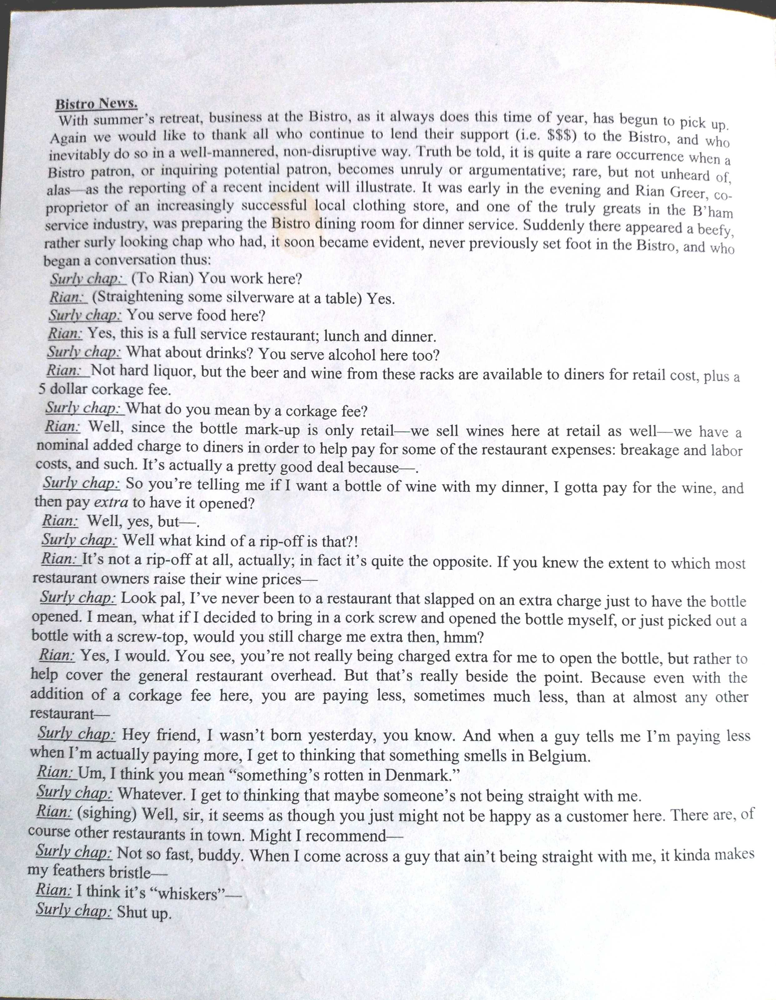
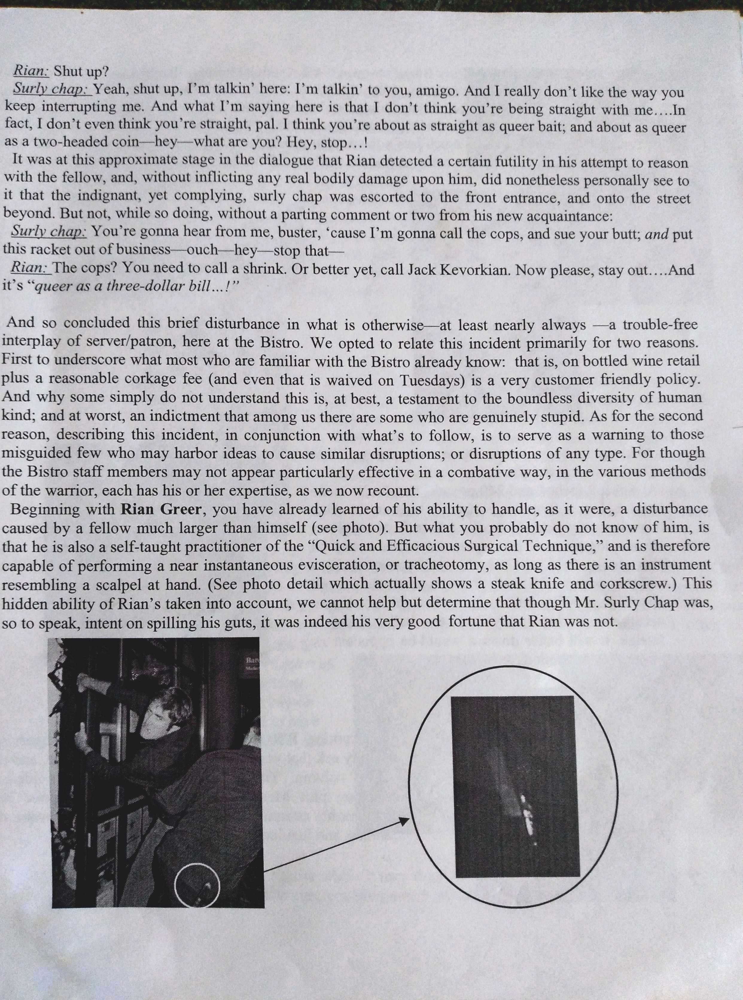

1
Eric's New Hat
Eric came in through the back kitchen entrance with a big smile and new addition to his cook’s uniform: a just-purchased secondhand chef’s hat. Acquired at a nearby thrift store, it was one of the erect, starched-linen types with long vertical folds. Well used it no longer had the crisp white appearance of a new hat, but rather a faded yellow-beige hue. In squared black capital letters the front of the hat's elastic band bore the phrase "KISS THE COOK." Thus, of course, the smile.
As he prepared for dinner service, Eric appeared both amused and pleased by his new acquisition. And he confided to his line-cook brethren, myself included, that he was looking forward to test the effectiveness of the hat’s bidding on a certain waitress of undeniable beauty.
At some point during the afternoon I took a glance at Eric’s hat and was struck by an idea. Then, shortly before the arrival of the dinner servers, I put my idea into action by plucking a hair from my head and snipping off a small section of beige-colored labeling tape. With both hair and tape concealed in my hand, I then approached Eric.
“It’s a great hat Eric,” I said. “but there’s a hair stuck right on the front of it.” I then brought my cupped hand up to his hat and lightly tapped in the piece of tape. Lowering my hand I then showed him the hair, easily passing for one of his own, before letting it fall to the ground.
“Thanks,” he said, “If that wound up on a plate it could have traumatized someone. Maybe even cost me my job”
“Very true,” I replied, chuckling at the hyperbole. Then stepped back to review my work. Yes indeed, at only a short distance the masking tape was virtually invisible. It only slightly impaired the lettering's evenness, and was a near perfect match to the hat’s time-worn coloring.
The night servers then began to enter the dining room, which was separated from the kitchen by a couple of swinging saloon doors. Soon they would be coming into the kitchen and interacting with the cooks as part of their work routine. I looked to Eric and noticed a slightly stifled grin spread on his face as the voice of a certain undeniably beautiful sever was heard approaching the saloon doors. And as he prepared for the surprised giggle - perhaps even a peck on the cheek - in response to his hat's invitation (KISS THE COOK); I braced for the likely very different, and indeed wholly unpredictable response to:
2
Click!* * *

Of himself, Musician Richard Strauss was reported to have said: “I may not be a first-rate composer, but I am a first-class second-rate composer."
Substitute chef for composer and this aptly describes myself. I have worked in many good restaurants and learned from some very good chefs. I have also owned a couple of decent restaurants at which I was the menu's creator and principle cook, thus chef by default. And once - albeit at a mangy, dying place of which I was ashamed to be part of - I even held the esteemed position.
But personally I could not care less for the title, nor have ever enthusiastically lobbied for the job. Cooking became a vocation more out of immediate opportunity than any career-oriented forethought or passion for the craft. Learning to cook well has certainly been a benefit to myself, to those for whom I have cooked, and those for whom I have worked. But I have very seldom spent non-working hours studying different culinary techniques, and devising ways to produce ever-improved food concepts, as first-rate chefs invariably do.
And though my cooking/hospitality experience (I've done it all) certainly has not made me rich, nor my future secure, it has introduced me to many interesting places, circumstances, and people. And, embellished with an assortment of quotes and chef tips, (second-rate, of course) that’s what this modest work is about: Written snapshots - literary small plates - of a first-class second-rate chef.
“When you go to a restaurant, the less you know about what happens in the kitchen, the more you enjoy your meal.” -Jeffrey Wright
4
Button Button 2
It was a two mile walk to the restaurant, and I cursed the whole way. I hated the place, hated the work. And resented the idea of a good high interrupted. But after doing my first tasks, vacuuming the front and setting up the pot and pan area, my mind was still clear. Bad peyote, I supposed. Or not peyote at all. Really didn't know.
Before dinner the service staff was allowed to eat and goof off a bit before resuming work. After finishing a plate of Daube, a sort of french beef stew, I stepped outside with Jepeski. He pulled out a bag of Colombian Gold and stuffed some in a pipe. I told him I popped some peyote buttons earlier but nothing was happening. He lit the pipe, inhaled, and offered it to me.
“Something will happen now," he said, exhaling smoke. We made short work of the bowl and went back in. It was good weed. I was nice and stoned and started slogging through my work.
So how you doin’ kid,” Rios asked, knowing, as all kitchen staff and probably waiters too, that me and Jepeski were lit. So what. A little buzz. I could still work.
“I’m doing just...”
The peyote kicked in.
“Whaa...?”
“Yeah, I know kid. Tough question. Just try an' keep up. We gonna need stuff ASAP.”
Don’t know why - probably shouldn’t have - but I drifted over to Jepeski and told him: “The peyote kicked in.” He looked at my face, into my eyes. “Wow, dude. You’re seriously baked. Got any more?”
I was seriously baked. And within a few minutes all staff knew I was seriously baked. Flapping Jepeski.
As one might imagine, a lot of details are gone. But some impressions of the ensuing, surreal hilarity remain: Repeated barks of "HOT!" just as Larry sent red-glowing pans crashing into the sink scalding my arms; freakish smells of burnt butter, frog legs, sauce veloutè and pink detergent blasting up my nose; tons of charred, greasy metal needing attention "ASAP!"; senior babes snarking me behind my back; french-gibbering waiters peering into my wasted eyes, pleading for le peyotè....
But I made it. Didn't get canned or even told not to get so baked at work. Just how the placed rolled. Going home probably made short work of another bowl with Jepeski in his jacked up Nova.
5
Nancy
It was a sunny late summer afternoon. Except for the lone woman seated at a table with a fine view of Lake Washington, the restaurant was empty. Observing her from the the opposite end of the dining room, the young server was struck by her apparent beauty. And by how much she reminded him of Nancy. For most of the previous year Nancy and he had been together, as happy as any two could hope to be.
Prior to his time with Nancy, nearly all of his teen years had been a tragedy of drugs, lying and thievery. But during those wasted years he yet managed to keep his french restaurant job, advancing from dishwasher to pantry cook. And it was there, shortly after Nancy became employed as a hostess, where they met and began a relationship. And as their intimacy solidified her wholesomeness helped to change his self-destructive ways. Hence his mind was now clear, his days fruitful, his future bright. But since only a short time had elapsed since Nancy had been compelled to move quite far away, his thoughts were distracted, his heart heavy.
Balancing a filled water goblet upon a circular tray, he approached the solitary customer. The nearer proximity revealed traits differing from Nancy, but also confirmed his more distant impression: she was beautiful. The shoulder-length of her hair was about the same as Nancy's and cast a similar golden sheen, but was styled with shorter, more defined waves. Her eyes a purer, darker blue than the grey-blue eyes of Nancy. The contour of her face was, like Nancy's, a pleasing elongated oval, but with a touch more prominence to her cheeks and chin. And though still possessing a vibrant youthful bloom, she was clearly older than Nancy, perhaps by six or seven years, he thought.
"Good afternoon," he said, placing the goblet on the table. "How are you?"
“I eat at this German-Chinese restaurant and the food is delicious. The only problem is that
an hour later you’re hungry for power.”
-Dick Cavett
6
Nancy 2
"I'm fine, thank you. How are you?"
"I'm fine," he said, slightly unnerved by the undisguised affection that her steady gaze communicated. Following another brief pause and still in the magic of her warm, lovely gaze, he focused back on the job at hand:
"Would you care for anything else at this time?"
"No. Water will be fine until my friends arrive."
The thought of her friends' arrival seeming to divert her attention from the server, she resumed looking out the window towards the lake. But as he turned to depart, she looked to him once more.
"Thank you," she said. "You're very sweet."
Chef Tip
Save the brine from your kalamata olives, marinated artichokes, pickled peppers, etc. When you don't have the time or desire to make a salad dressing such as above, mix together 4-5 parts mayo with 1 part dijon mustard (or mustard of choice.) Whisk in brine to desired thickness.
For a nice on-the-fly Caesar dressing, start with mayo/dijon base and add (incrementally until desired taste and consistency is achieved) finely chopped garlic, fresh lemon juice, Worcestershire, red wine vinegar, olive brine, black pepper, and tabasco.
7
Nancy 3
Turning to face her he again noted the genuine warmth and affection of her gaze as she held his eyes.
Though his equilibrium suddenly shattered, he was yet able to mumble a shy "thanks" before she returned her attention to the lake.
From the moment he met Nancy and indeed throughout their relationship, her presence invariably had a mellowing effect on his spirit. This was not a result of blunted interest or want of excitement, but rather a manifestation of profound compatibility. Similarly attuned to life and its vagaries they were, by extension, naturally attuned to each other. They were close in age and status, enjoyed many of the same activities and pleasantries, were alike in temperament, and physically and mentally complimentary. They were content together during idleness, play, passion or silence. With Nancy he was always at ease.
It was a perfect contrast to how he now felt. And walking the length of the dining room to the waiter's station, the young server wasn't sure if he could complete the journey without toppling over. His heart raced, his limbs trembled, and his suddenly untethered mind reeled in a crazy delirium of alien intoxication. He knew nothing of this golden haired beauty, but her unabashed affection and simple compliment filled him with an intense blast of confusion and joy.
Entering the wait station, young server began organizing for evening service when the head waiter arrived. Tall, charismatic, and a decade his senior, the head waiter was more than a little intimidating to the younger man, who typically was hesitant to initiate any conversation not related to the job. At this time, however, he needed to vent some of the emotion surging through his nerves. Hence overcoming his accustomed timidity, he paused briefly to compose his rambling thoughts and spoke:
"There's uh, uh, a lady out there. Table 10. Very beautiful. Um, seems to like me."
Moving to the doorless arch separating the wait station from the dining area, the head waiter peered in the direction of the lone customer. Then with an expression of amused disbelief looked back to his associate.
"You don't know who that is?" he asked.
"No."
"That's Nancy."
8
Nancy 4
"Nancy? Well that's a...."
"Nancy Wilson"
"Oh. Nancy Wilson?"
"Oh come on, you can't be that sheltered. You never heard Magic Man....Crazy On You....Never heard of Heart?"
"Ahh. Well yes. Sure I have. But she, she was really nice....Said I was--"
"Yeah, well she is really nice. Just who she is. I know her. Sing back up for the band sometimes."
"Really?"
"Yeah, really. And she really is just nice. Damn kid, what were you thinking...?"
The young server looked on as the head waiter went to greet the rock star, now joined by her companions. Probably fellow band members, he thought, also noting the presence of her raven-haired rock star sister.
Completing a couple more tasks in the wait station, the young server then reluctantly returned to the table, now a scene of fashionable camaraderie, and awkwardly placed goblets of ice water and baskets of bread among the chattering group.
Unable to disregard the great chasm suddenly thrust between himself and the lovely woman whose prolonged gaze, only moments before, filled him with such delirium, he now endeavored to avoid eye contact. And likely aware that he must now know of her superstar ranking, she probably did as well.
Amuse Bouche
Not long after the above encounter, I was waiting tables at another Kirkland restaurant when Nancy's sister Anne, and an older woman entered and sat in my section. Anne was very polite and pleasant. The only thing regarding the famous singer which stood out to me was how she ordered her steak. Which was blue.
9
The Day Chef Ned [Nearly] Lost His Head
Almost immediately upon his hiring at the upscale barbecue place, Chef Ned and I became friends. I had little cooking experience at the time, and by contrast, he was a veteran who previously worked side-by-side with two of the nation's rising star culinarians, Norman Van Aken and the late Charlie Trotter.
The chef who hired Ned had talent and was also a friend, but youth, drinking and a volatile temper, made him ill-positioned for the job. It was therefor inevitable for the owner to let him go, and replace him with the more competent, and (thankfully) far easier-going Chef Ned.
I learned a great deal from Ned, and with the aid of his extensive teaching - spanning four years and an equal number of restaurants - became a solid line cook. And for his mentoring and sharing of his considerable talent and experience I will always be grateful.
Chef Tip
When making Crab or seafood cakes, rather than breadcrumbs, try using rice as a binder. It works, and tastes, much better. In a food processor just blend some cold basmati or jasmine rice and work in enough to the fish/seafood mixture to bind.
*Subtip* Pureèd raw shrimp (or shrimp and rice) works good also.
*Subtip* Make sure that whatever seafood for the cakes is used is very well dried.
*Subtip* My preference is to avoid strong additions like peppers or zucchini. I've found A little sauteèd onion or fennel along with lemon and tarragon makes the best cakes.
10
The Day Chef Ned [Nearly] Lost His Head 2
An avid hiker during that period of my life, I would frequently recount my alpine experiences to the new chef while at work, and at some point he expressed an interest to join me on a future trek. Shortly after Ned and I planned a hike to lake Serene, a mountain-top jewel in the Northern Cascades, near Gold Bar Washington.
Arriving at the lake's trail head we began our ascent and soon came upon a group of two couples sitting on a large rock slab overlooking a creek, a little off the left side of the path. Engaging our attention one of the group, a thirty-something guy, asked if we were were interested in buying a beer. Grinning he pulled a 40 ounce bottle of Old English 800 from a cooler. "Nice and cold," He said. We declined. The offer was a first in my hiking experience, but no further drama ensued with the beer guy nor his companions, and we got on with our hike.
Upon our return, however, when only about half a mile from the trail head, gunshots suddenly began to report quite close to the vicinity of our descent.
Attempting to alert the unseen shooter of our presence we repeatedly hollered down towards the gunshot sounds. But much to our increasing agitation the shooting commenced, off and on, until we arrived at the previously noted rock slab area. It was still occupied by the two couples but now the beer guy - clearly having partaken of more than a little of his malt - was brandishing a pistol about and, once again, blasting shots into a rocky area up the mountain side. And all in the group seemed to be taking boozy delight in his recklessness.
Nearing the shooter I pleaded for a pause in the firing before hustling past him as quickly as possible. Only to then be stunned by a question from Ned, who lagged slightly behind:
"Hey, you still got that beer?"
Reloading his gun the beer guy grinned. "Sure do."
"Can I buy one?"
"Don't see why not. Come
on
over here."
11
The Day Chef Ned [Nearly] Lost His Head 3
Amazed I watched as Ned strode closer to the armed, drunk, power-deranged beer guy."How much you want for it?"
"How much you willing to pay?"
Perhaps noting the beer guy's lurking malevolence, Ned seemed to finally grasp the danger.
"Oh, well," he said, his voice thinner, higher-pitched, "um...whatever you think is fair."
"Well gimme twenty bucks then," said the beer guy, and his friends laughed. Ned laughed too, nervously.
"Ha Ha. That's alright. Guess I'll get going now." And he turned to leave.
"You sure as hell wont!" Said the other, and fired up the mountain. "We still got some business to take care of."
Forced to stop and re-engage the beer guy, who now threateningly waved his pistol, Ned responded. "I...I don't have 20 dollars."
"Then make a counter offer, dipshit. Negotiate."
"I...I only have four dollars, is that..."
"Four dollars! Are you trying to insult me, buddy?"
"No, man. That's really all I have." And he pulled out his wallet and removed the four dollar bills.
Momentarily glaring at Ned, the beer guy then looked to his friends."Should I let this dipshit rip me off?" They laughed. "That's up to you," a women said.
"Ok dipshit, lucky for you I'm in a good mood. Get over here and let's finish this deal."
It was only a few steps, but Ned walked slow, his legs wobbly. He handed over the money.
Again glaring, the beer guy reached into the cooler, pulled out a forty, moved it towards Ned. Then grinned. "Here you go, dipshit."
Hand shaking, Ned took the bottle and turned.
"Ha! Ha! Ha!" The beer guy screamed, and positioning his pistol right behind Ned's head, fired several shots upward. "Ha! Ha! Ha!"
I'll never forget the look on a man's face who believes he's suddenly going to die.
Hey, You Still Got That Beer?
12
The Brothers Dumas
Charm has many forms, many facets, many faces. Though different in essence Alexander and Frederick Dumas were both enormously charm-gifted. Raised in the south Seattle hood, neither Alex nor Fred were inclined towards the rap-culture thuggery common to the area; preferring, rather, to interact with two distinct but equally effective versions of humor, and charm.
The barbecue joint was located on a busy corner of Capitol Hill, Seattle, where Alex and Fred worked. Alex was a prep cook, Fred a dishwasher. After a few years working front house gigs, I was back in the kitchen, painting ribs and grilling steaks at the same place. Walnut-hued, medium height and fit, Alex was baritone-chatty, friendly, open, innocent. Fred was a shade darker, taller, leaner, and with a deeper voice that, though less active than his brother's had a tone of cleverness and irony. With only a slight alteration in demeanor or expression either could have looked intimidating, even menacing. But neither seemed suited towards, or interested in, being thus - their appearances invariably projecting geniality and humor.
The restaurant's street level cooking line was behind the bar with an open view of the dining room and the busy Uptown streets beyond. During lunch and dinner service, myself and the other line cooks communicated by phone with the prep cooks and dishwashers, who worked in a spacious preparation area, one floor below. In need of a red onion during a busy lunch one day I phoned downstairs and Alex answered.
"Dumas Diner, chef speaking," He joked.
"Hey Alex, can you bring up a red onion."
"Okay!"
"Need it quick, please."
"Alright!"
It seemed too long a delay (when one is busy it always does, right?) but Alex finally did arrive. He gave me the onion. It was yellow.
"Didn't I ask for a red onion?"
"Yeah, but those other ones are purple...."
Funny. and charming.
13
The Brothers Dumas 2
If to insult seems to be the intention of the above anecdote then I have been misunderstood. Alex was a wonderful, genuinely amusing person. But as with us all there were times - largely due to his charming innocence - that his humor was not entirely intentional. And lest you think the brothers' names are falsified to mock, or - in the case of the last name "Dumas" - intended as a demeaning pun, (= Dumbass) you would be wrong on both points. Their names as here written, both first and last, are genuine.
Other instances of Alex's charm, both witting and not, I could include in this brief portrait, but prefer to move on to one involving his brother Fred, who was equally ready and able to amuse.
One night before a Holiday dinner event my good friend chef Ned, (First-class and first-rate) and I were on the upstairs line preparing a few turkeys. Needing some bread to make stuffing, I called the prep kitchen and in his deep bass voice, Fred answered:
"Boiler room!"
"Hey Fred, can you bring up a loaf of bread?"
"Sure. Need it
tonight?"
"That's probably best, Fred."
"Ok, get my peeps right on it."
Loaf in hand, Fred lumbered up to the line and dropped it on the counter. Then pointing to a bag of giblets next to one of the turkeys, asked:
"That its balls?"
"Sure is Fred," answered the chef.
"Why they in the bag?"
"In case
anyone wants to eat 'em, I guess."
"Hmm. So where's its penis?"
Skipping nary a beat chef Ned reached into the turkey and pulled out the neck bone.
Following a few
seconds silence Fred shook his head and smiled.
"Damn."
14
One side note regarding Fred. At some point during his employment at the BBQ place he began singing a made-up lyric in a sort of country style. The lyric went for a time thus: "I don't need know help to starve to death." And soon after with addition: "I can do that all by myself." Apparently a current babe was living off of his rather modest means. For years I kicked the initial lyric around in my head, and eventually decided to make a song of it. It's made with the use of a free music notation program, (Musescore) so isn't the best quality (especially the lyrics); and could definitely use some polishing. But for any curious click the link:
Chef Tip
Don't rinse pasta. Cook al dente (firm and tender, not mushy), strain well, return to stove top and add a little olive oil or butter. Then over low heat mix in prepared ingredients; or move to a bowl and top with sauce. If making for future use - which simplifies meal preparation considerably - cook al dente or slightly less, strain, spread thinly on a sheet tray, and work in a little light olive or vegetable oil. When room temp place in a container or plastic bag and refrigerate until use.

15
Celebrity Chef 1
It was un upscale brewery restaurant in downtown Seattle at which the celebrity chef was hired. That he refused to even taste the fine beer struck me as odd, but of little consequence. Of greater consequence was the veiled dislike he had for me from the very start of his employment; and which only a short time hence developed into undisguised hatred.
I had been working at the place since before it opened, finishing the wooden dining tables, organizing the kitchen equipment, cleaning, etc. It was a beautiful place with wood-and-copper-fronted beer tanks inside a spacious, open dining area; and a gorgeous solid-copper, half-circle-shaped bar. The owner was British as were the lesser-carbonated, lightly-chilled ales. Once open I worked the grill and sautè stations at night, a key position. And I was very good at my job.
My afore-mentioned friend, Ned, was the original chef, but upon securing a position with former colleague and rising-star-chef Norman Van Aken at a new Florida restaurant, he gave his notice and left. A solid replacement, chef Tom, was then hired, did an admirable job, and became on friendly terms with me as well. But after just a few months he gave his notice and began the interviewing process for another kitchen head.
At some point during his interviews chef Tom told me that one interested applicant was something of a Los Angeles celebrity, having been sous (assistant) chef to Wolfgang Puck at one of Puck's successful ventures. I was intrigued and voiced my not insignificant support to hire him.
Soon after chosen to be the restaurant's 3rd chef, the L.A. celebrity came on to the line to meet me. He was a gruff, somewhat neanderthal-esque looking dude and after a brief introduction in a growly voice asked:
"So, does it get pretty hot in here?"
The kitchen being open and adjacent to the temperature controlled dining area - hence clearly not a particularly hot cooking environment - the question seemed odd. I told him no, the kitchen wasn't particularly hot.
"Does it get pretty stressful?"
"Bad food is made without pride, by cooks who have no pride, and no love." -Anthony Bourdain
16
Celebrity Chef 2
"Sometimes, but not more than any other line cooking job," I answered, again thinking the question odd, as though he was fishing for a certain response. During that first encounter I noticed as well that though he was smiling and acting friendly, something about his manner betrayed annoyance. And his eyes were hostile.
Shortly after the L.A. chef was hired, another California guy was brought on to replace the General Manager. An openly gay San Franciscan, the new GM didn't seem to take a shine to me either.
I imagine it is not unusual for new management to have some resentment for well-entrenched staff, as I was; and especially those with a strong and positive relationship with the owner - as I had. But whereas the new GM's mild annoyance seemed typical new boss/subordinate stuff, the chef's ever-mounting contempt, and attendant rudeness, badgering and temper flare-ups - towards me alone - were becoming increasingly atypical and concerning.
One night, however, he came onto the kitchen line with a smile almost obscuring the hostility of his eyes, and began a conversation thus:
"Je pence donc je sui."
Never having given him any indication that I spoke French, it was yet again another of the chef's conversational oddities. But at least the sham smile was back, so I played along and asked what he meant. Visibly proud of his achievement he translated the quote, "I think therefore I am," and told me the quote's author, Rene Descartes.
How long he worked on this performance was hard to know, but it was clearly contrived and ill-suited his gruff, neanderthal manner. But the pretense of refinement seemed to ease his antipathy, and he went on to inform me that in addition to philosophy some of his other cultured enjoyments included painting, reading and classical music. Letting him know I was a reader and classical music enthusiast as well, a temporary truce seemed to ensue at which time he began a surprisingly normal line of inquiry.
"Hey I'm lookin' for a more permanent place to live around here," he said. "Tryin' to get an idea of some of the neighborhoods. Where do you live?"
At the time I was living in a residential section of Capitol Hill, and so told him.
"What's it like? Do you like it there?"
17
Celebrity Chef 3
I was living a few blocks up from the busy, central part of Capitol Hill. It was a quiet part of the hill, but there were some nice shops and restaurants within a couple of blocks; and the general area had a pleasing balance of greenery and interesting homes and buildings. I really liked living there, and told him. At the time Capitol Hill also had - likely still does - a notably large gay community, and I informed him of this as well. And of course there was the bustling central area replete of clubs, bars and eateries of all types, a stylish and unique shopping mall, and a couple of wonderful old-school movie theaters. Capitol Hill was an eclectic and exciting place for a youth such as myself. I really did like living there.
Whether or not my enthusiasm for the place had any impact on the chef's decision, I never did find out. But as time passed there were things about him I absolutely did learn. First was that he was of that managerial breed which vastly prefers swinging a clipboard, yakking on the phone and basking in the schmooze of sales people, over any genuine labor. And that was probably a good thing since those rare times when he deigned to enter the cooking line and make a plate of food, it inevitably was an embarrassment to all but himself. And when the place was jammed and he was needed on the line he quite often fell apart. A good example of this occurred one evening prior to a late Seahawk's game, not long before my termination. The place was slammed. In spite of how busy it was I watched in awe as the celebrity chef struggled with a paltry order of two tomato-based seafood pastas. After placing the seafood into the pans he was then clearly befuddled over how to proceed. Embittered and ashamed, he reluctantly caught my eye and asked what to do.
"De-glaze with wine and add the tomato sauce," I told him, "then finish with cream." He then commenced to babble repeatedly "yes, cream, cream!" while adding pasta, the merest amount of tomato and ladling in a ludicrous quantity of cream before slopping his finished work into bowls bound for two unfortunate patrons.
Likely stinging from his observed incompetence, the chef never again tried to mask his seething animosity, and going forward even refused to speak to me. Meanwhile I was hearing from a couple of other line cooks how favored they were by the L.A. chef, and how according to him they were destined to become his new "dream team."
18
Celebrity Chef 4
I wasn't sure how the new chef was going to sell his decision to fire me, but the scent was in the air; the writing on the wall: I was on my way out.
Soon after I received a call at my home from Richard, the owner, informing me that I was fired; that both the chef and GM said it needed to happen; and that as much as it distressed him, he had to respect their wishes. Instructing me to come in later to pick up my final check, he then said we could discuss further details of their reasoning if I wanted.
I arrived at the restaurant in the evening and joined Richard who was sitting at the bar clasping a pint of blond ale. Upon telling him I did want to hear why I was fired he asked the bartender to bring me a pint, and in his cultured British-accent, started explaining.
"The chef insists you're a homophobe, and has convinced the GM of it. He said you told him not to move to Capital Hill because of the prominent gay presence there. And said that you said gay people disgust you."
It was incredible. "Um, really?"
"Yes."
"But..you don't believe that...do you?"
"I don't know. Considering your friendship with Robin [a gay fellow line cook who indeed was a friend] it doesn't really make sense."
"The chef is lying," I said, fury mounting and making it hard to speak calmly. "He's absolutely lying. Has wanted me gone since he was hired. Despises me."
"I'm afraid I must respect their decision. It's because -"
"But this is absurd," I cut in. "I told him I like living on Capitol Hill."
"Did you say anything about the gay presence there?"
"He asked me what it was like. I told him there was a large gay community. Never said they disgust me. I...I can't believe this."
20
Celebrity Chef 5
"Well the problem is the GM believes him - you know he's gay, right? - and they both consider it grounds for your removal. And since I did hire them to manage - to make the important decisions - it is necessary for me to show them my confidence. I'm very sorry."
"But...Richard listen...what that manipulative jackass of an incompetent chef said isn't true....I knew there was something wrong with this guy... He's fucking off, Richard. Whacked. Bad."
For a while we thus continued but Richard would not relent. My argument was not to prevail. The celebrity chef would have his way.
Finding another job was not an issue. Within a couple of weeks I was working the sautè station at an upscale Italian restaurant near the waterfront. A few months later I got a call from my friend Chef Ned, asking if I wanted to work with him at the latest Van Aken's venture. I absolutely did, and shortly after started the journey east. En route, however, about thirty miles west of Las Vegas my car caught fire and was destroyed. After three days mulling things over in Pahrump Nevada, I decided to take a rental car to beautiful Lake Tahoe, and try my luck there.
I was a year in Tahoe and loved it. And would have remained had I not let a girl who I was then with convince me to move back with her to the northwest, so she could finish her studies at Western Washington University.
Back in the Northwest, I eventually made it in to the brewery restaurant. The celebrity chef was gone. I asked Richard what had happened, and he said the chef got too burned out to handle things. After another year or so, I checked back and the place had changed ownership.
Several years later I was working with a guy who had worked with the L.A. celebrity chef as well. He told me the reason for him leaving L.A. was due to some scandal he was embroiled in. Curious I later googled L.A. celebrity chef, and his name: John Sweeney. And among other tragic reporting, read this:
21
Celebrity Chef 6
"This is a story about love and death. It begins a few days ago in a large, bare Santa Monica courtroom. A young man in a black suit sits at a long table. His name is John Thomas Sweeney and he is 27. His face is as white as an egg and he is blinking rapidly. His large pale hands lie folded meekly over a Bible. Eleven months ago, in an act of violence that horrified the entertainment community like no crime since the Manson murders, the same hands closed around the throat of an actress named Dominique Dunne and brutally choked off her life."
22
And She Called Me A Liar
It was a swank restaurant with lounge and tennis club in the heart of Incline Village, Lake Tahoe. I had only been in Tahoe a few days, and this was my first job interview. The chef was tall and direct, and in a strong, commanding voice asked me if I had cooking experience. "Yes." Then asked if I had French cooking experience. "Yes." Then told me I was hired and to start the following day. Gard Manger position. My job was line preparation of salads, appetizers and desserts.
The chef's last name was identical in pronunciation to that of a then famous chef, one Roger Vergé, (Ver-jhay) and during one of my first days working with him, I asked if there was any relation. To my surprise he said there was, that Roger Vergé was his Uncle. Knowing nothing of the chef I had no reason to doubt him, but as the cloth-stenciled spelling on his chef's jacket didn't match that of my recollection of the French master's last name, I was a bit mystified. Out of curiosity the next day I went to the library and located one of Chef Vergé's books. The spelling was, as I thought, different from that of my current boss. Quite different.
The Tahoe Chef liked my work, and we soon became friends. He was a fine chef, professionally trained and gifted with an excellent palate and nose. He was also self-confident, tremendously charismatic, popular with women and at ease with the local celebrities.
Before long we were goofing off together outside of work. Checking out new places to have lunch. Sneaking into the restaurant after closing hours to snag a bottle of wine, "I've got a key!." Dinner with the wives - I was recently married, he for a few years - playing blackjack at the Hyatt. And when winter arrived, skiing at one of the many nearby resorts. We had a lot of good times. He was great fun to be with. I really liked the guy. Even as it became clear that he really was a bad sort, and a big time liar.
“I was at this restaurant. The sign said ‘Breakfast Anytime.’ So I ordered French Toast in the Renaissance.” – Steven Wright
23
And She Called Me A Liar 2
To me it made no sense. He was popular and accomplished. There didn't seem to be any sound reason to fabricate his experiences or embellish his rich, active life, but that he did. Big time.
Of course he was not nephew to Roger Vergé. Nor, as plainly evident by his clumsy skiing, had he ever been an instructor - though telling me he had. Nor was he a "semi pro" golfer, as claimed. (A waiter informed me that he was one of the worst golfers, if not the worst, he'd ever played a round with.) During spirited conversation many of his truth-sworn reminiscences, however funny and forcefully told, were obvious lies - at least to those who had come to know him. And in particular obvious to his sweet, adoring wife who, regardless of the falsehood's transparency would simply look to him smiling and say: "Oh, honey." But never once did I hear the veracity of his tales challenged. He was an emperor among subjects.
As plentiful as his lies were the chef's infidelities. At length becoming both friend and confidant I was increasingly made familiar with the details of his cheating, as well as with some of the side-girls themselves who often would show up late at the restaurant before leaving with him.
At some point the chef even rented a small apartment to more easily facilitate encounters with a new babe that he seemed especially fond of. Quite in opposition to his sweet, naive wife the current paramour - who was now regularly dropping by the restaurant - walked, dressed, laughed and generally behaved like a tramp. But there was no question regarding her allure. Clearly enamored, the chef even admitted to me that of all his side babes, she was the most exciting, and that he could even imagine divorcing his wife for her. A naturally happy, buoyant person, with this new hottie in his life he was positively elated.
One day, however, he came to the restaurant in a very obvious funk. Quiet, sullen, brooding, I'd never seen him thus. After a few hours wondering what could be the cause of his distress, he told me his new girlfriend said she couldn't take him anymore, and broke up. Then looking to me with a wounded expression of sadness and offense, said:
You guessed it! 24 Hover below!
Amuse Bouche
My two best Tahoe friends were Joe and Matt. One summer night the three of us got loaded on Jaeger shots and decided to take a swim. It was breezy and the cold lake was alive with choppy waves. Undaunted and numb with booze we disrobed and jumped in. After bobbing about for a while we swam ashore, only to learn we had drifted from where our clothes were. And in the intense dark couldn't find them. After a few minutes bumbling around, Matt - a thick, beefy guy - became irritable and climbed up to the roadside. I don't recall exactly how long it took to find our clothes. But it was at least long enough for a couple dozen motorists to see a beefy, buck-naked, pissed off-looking dude with arms crossed, cold-shriveled dick, and fat ass slung over a rail post.
25
Sa'issfaction
Shortly after the chef's girl broke up with him a beautiful, sultry blonde was hired to seat customers. Before long she and the chef were leaving together, and he was again of good cheer.
As previously written, the Chef was a man at ease with the rich and famous. David Coverdale, lead singer of the band "White Snake" lived in the area, was a regular customer and buddy to the chef. And at the time Mr. Coverdale was recording an album with legendary Led Zeppelin guitarist Jimmy Page - also now a restaurant regular and chummy with the chef as well.
At some point during Page's Tahoe sojourn, he consented to play with a local rock band in the establishment's lounge. Though a small venue - 100 person capacity, perhaps - the band erected an impressive stack of amplifiers, which, upon hopping up to the bar-sized stage, Mr. Page gave instructions to "crank 'er up."
Though it literally pained me to do so, I watched the entire hour-or-so-long performance from the right edge of the stage, directly in front of the amps, no more than six or seven feet from the rock and roll legend, himself. Looking to be in his mid-forties, Mr. Page's physical presence was less than impressive. No longer the ripped, axe-slashing super stud in gleaming leather bell bottoms, Page was now hunched and scrawny with lots of grey in the yet long rock-n-roll hairdo. And he had a grotesque way of contorting his face and thrusting out his aging lips when playing. But his guitar mastery was truly impressive. Hence, in spite of the deafening noise I was glad to have seen the show.
After the performance the rock star sat at a table sipping beer with his girlfriend, a brawny, long-haired bodyguard, and a few idolizing strangers bold enough to hang with a legend. To his immediate right also sat the chef. Suffering from hearing loss that would last three or four days, I sat at the bar unobtrusively (I hoped) observing.
With most of the table's attention focused on the chattering guitarist and chef, there suddenly occurred a burst of loud, prolonged laughter from the entire group. A bit far away to comprehend the levity, I asked the chef about it when at length he approached the bar for a drink refill. Evidently a coven of she-satanists knew Page was in town, were dogging his activities, and some were at present in the lounge. Mr. Page, apparently, represented an elevated status in their dark belief's hierarchy. The chef then said that upon being informed of this the rock legend grinned and in his high-pitched britt-accented voice (admirably mimicked by the chef) quipped:
"Don't really mind who they think I am, really. Long as they gimme sa'issfaction in the bathroom."
As curious as any fan of the comings and goings of a true legend, I yet declined to wait for confirmation.
26
Let's Give Him A Hand!
Though his wife was now with child, the chef's relationship with the blonde hostess continued, increasing in its seriousness. Always a bit heavy, he was now working out, toning up, slimming down and visiting tanning booths as well - physical changes that became increasingly noticeable and were likely at the new gal's insistence.
Also changing were his dinner specials. Previously creating pretty much exclusively French, or Italian (at times) cuisines, he was more and more working with traditionally Asian foods and flavors. Curries, tandoori, peanut sauces, sticky rice and rice noodles, spicy chilies, sesame oil, etc. were being substituted for, or combined with the restaurant's usual Mediterranean fare.
One day I asked why the changes, and he told me:
"We're going to Taos. Opening up an Asian-Fusion place. Calling it "The Edge."
"Really? You
mean you and the new hottie?" I asked.
"Hey! Don't talk about her like that. She can read too, you
know."
"I'm sure she can," I said, surprised by the intensity of his umbrage."And didn't mean to
imply she couldn't."
"Well anyway, yeah, that's what's going on. You wanna come with us?"
Having already committed to move back to the Northwest, I told him no, I couldn't. And decided it was probably best not to ask about his wife and unborn kid.
Not long after the entire staff was compelled to attend a meeting to be conducted by the financing owner. A guy as dopey as he was rich - and he was quite rich - it would no doubt prove to be little more than time wasted.
The meeting time came and my suspicions were confirmed. Phrases like "effectuating positive," "zeroing in on the excellence," and "fluid client responsiveness" tumbled forth, sedating all but the usual grandstanding sycophants into a groggy stupor.
Winding it up, his last order of business was to heartily thank the chef for his excellent
work.
"You've done a great job chef....Let's give him a hand!" he concluded, and all obeyed.
Beaming, the chef raised his fists above his head clasped his hands and pumped them in victory.
The following day the chef did not show up for work, nor would there ever again. Word then spread that during the previous night someone with a key entered and robbed the place blind.
27
Old Man
The Tahoe restaurant's working owner was a grumpy mid-sixties dude, customarily referred to as "Old Man." At least behind his back.
Personally I had little issues with Old Man, for he seemed to respect my work and generally refrained from bothering me. I did, however, have issues with his management of the business funds. More often than not, after receiving a paycheck and traveling the 20 or so minute drive to a bank in Tahoe City, the check would not clear. Old Man always blamed the bank. Eventually I always did get paid but the same could not be said for the non-legal Mexicans working there. Most of whom upon learning their labor was not to be compensated, left after only a short period. Old Man was a real class act.
Anyway, one snowy winter day the sous chef, Rick, and I trudged out to an adjacent storage shack to grab some needed prep items. Because of the harsh conditions some of the kitchen supplies had been hastily dumped in front of the shack, and had yet to be moved inside. While Rick and I collected the needed stuff, Old Man, on his way to the restaurant stopped and observed. His grumpy side emerging, he then proceeded thus:
Old Man (To Rick): Hey what's going on here?
Rick: What do you mean?
Old Man: What's all this shit doing outside?
Rick: It was delivered this way because of the snow.
Old Man: Well get it inside dumbass. I Pay good money for this shit.
A good-sized, athletic and somewhat quick-tempered sort, Rick held his tongue as we began digging the supplies out of the snow. But I could sense his rage.
Fast forward to chef "Vergé's" disappearance and it was only reasonable to make Rick, who knew well the ropes and was a quite competent sous, the restaurant's head chef. Not long after Old Man bumbled into the kitchen expressing some unremembered grievance. Old Man apparently did not realize that the business's power balance had shifted, and that his practical status was now as irrelevant as Rick's was crucial. This Rick knew. He had patiently waited, and the hour of vengeance cometh. No, he didn't punch the guy out. But his verbal smack down was both vicious and caused tremendous humiliation. And with a concluding salvo on the order of: now get the fuck out of my kitchen, Old Man, before I knock your teeth out!, Old Man meekly departed.
My days for the Tahoe restaurant weren't long, but I don't recall Old Man disrupting the kitchen again.
28
Take My Wife - Please 1
It wasn't depression, but for quite some time after moving from Beautiful Lake Tahoe to Bellingham, Washington, I was not very happy.
It was late fall when my then wife and I arrived. The town was damp and dreary, grey all the time. Worse, a hazy chemical stench from the Georgia Pacific paper processing mill eternally mingled with the saline air.
We were both hired on at The Oyster Bar on Chuckanut Drive, a nice hillside place with a view of the Northern Puget Sound and San Juan Islands. She to wait tables, I to work in the kitchen.
The chef was a good, hardworking mild-mannered guy. I liked him from the start. But there were a couple of cooks I did not like, nor did they like me. One an army vet who spoke in a serpentine whisper, and mumbled a lot. The other a thick, conniving, Canadian loud mouth. The two were pals - a mother and a father snake - disrespectful to the chef, and constantly screwing off.
As much as I liked the ex, and still do, we never should have married. She was - surely still is - a bubbly, outgoing, very loquacious type. More or less my opposite. And after the new-love varnish rubbed off, we spent more time bickering than any thing else. At times being a moody, sarcastic sort I can't say I wasn't part to blame. But I swear I never came across anyone with such tenacity to argue. Likely never will.
But the bickering was generally when she and I were by ourselves. Working together at the restaurant we most often got along. The same can't be said regarding my ex and the army vet and his Canadian pal. Especially concerning the vet. In that whispery voice of his he was just as eager to quibble and contradict as she. At work they were always squabbling. And the restaurant was small. No place to go to get out of earshot of their constant back-and-forth. Just plain annoying.
At some point the Canadian got promoted to the chef position at a new place started by the same owner and shortly after got canned when the owner figured out what a dufus he was.
Amuse Bouche
The Oyster Bar kitchen has an east-facing window with a view of the small, roadside parking area. One afternoon just shortly before opening a very nice Mercedes pulled in and a well dressed man and woman exited. Knowing the front entrance was still locked I went out and asked the couple if their intention was to dine. "What do you think, genius," the gentleman spat, tugging the locked door. "Now could you just arrange to have us let in...?" I wont detail what shortly followed. But will strongly advise against copping a snotty, superior attitude - though superior you may be - to the guy about to make your food.
29
Take My Wife - Please 2
Kind of a funny story about what finally happened to make the owner give the guy the boot. Apparently the Canadian guy refused to cook a steak well-done for a customer. Said it was against his culinary principles. As luck would have it, the customer was the owner's mom. Shazam! No more uppity Canadian chef.
But at work I still had to deal with the constant quibbling of my ex and the vet. Went on non stop for a few solid months. Bugged the crap outta me. Then - and I don't know exactly why - around late spring/early-summer their bickering began to subside. Things got a lot more civil. Probably as a consequence both me and my ex actually started getting along with the vet, sometimes even doing things with him.
Between me and her, though, things just got worse - the arguments getting longer, hotter, weirder. One night at an outdoor party my ex seemed to have even more than her usual belly full of sassafras, and we got into something that kept going round and round. When I was finally able to break free I walked over to the vet who was grilling salmon on the barbecue. "Take my wife," I said to him. "Please."
And by golly he did! Not sure the of the exact chronology of things but as summer rolled along I kept noticing how their mannerisms toward each other got warmer, more intimate-looking. Then at a party at the beach one night they sat side-by-side in front of the fire all night long. Just talking, relating.
Then one day I get phone message where the guy says: "Hey boy...you better watch your back...boy," then hangs up. He was trying to disguise his voice but there was no mistaking that whispery, snake-like intonation. It was surely the vet. I guessed that he and the ex must have been a bona fide item, and that he was just pissing around his new territory.
Meanwhile the ex wasn't owning up to anything. And in spite of the menacing phone message, when working or doing any sort of socializing with the vet, he was always pretty friendly.
Then things got resolved in a nice, easy way when one evening I saw my ex yakking it up on a pay phone. It was mid summer, around 7 so there was still plenty of daylight. No mistaking it was the ex. So she comes home later, maybe 11 or so, and I ask where she's been. She tells me at work, which I know is a lie because wait shifts at the Oyster Bar start between 4 and 5. Then I tell her that's strange because I saw her jabbering on a pay phone around 7.
Well her eyes then pretty much confessed, and not long after her mouth. Yeah, she was with the vet. They were an item. Went on to have a couple of kids and last I saw of them - when they dropped into a restaurant I subsequently owned - they seemed a happy family. Though I have to admit I was a little curious about that shiner she was wearing.
30
Bennie and Joan
One night while line cooking at The Oyster Bar the owner came up to me carrying a plate that had a piece of plastic in with the vegetables. It was a new guy doing the vegetables that put them there, but since I was the lead cook, no question I was partly to blame. "How'd this get in here," the owner barked. Well I didn't really know and was too busy to come up with a clever answer, so I just told him it was an oversight, that sometimes shit happens. Not pleased with my response he then got in my face.
"That's a real jackass answer," he said, visibly irate."I gotta have something more than that to tell the customer. Now how'd it get in here!"
It wasn't the first time he blew up at me, so I got probably more irate than he was and walked out. A couple weeks later I was hired to cook at another eatery on the puget sound, but this one more of a diner-by-the-sea that every waterfront area seems to have. And like all those other crappy places, there was a cranky, domineering waitress lifer.
Her name was Joan, but she looked, sounded and acted more like a middle-aged Betty Davis. The establishment's uncontested acting lieutenant, Joan - a former Georgian - was pale and gaunt with bleached yellow hair and a raspy, wheezy chain-smoking voice. And though brusque and sometimes crotchety Joan was also capable of playful banter and took customer service very seriously. Consequently she was well like by most of the restaurant's patrons, and was an old friend to lots of the regulars. Concerning her staff subordinates - and that was pretty much everyone except the chef and GM - she could, however, be a brutally derisive enemy. Competent at my job and coming from an exalted establishment like The Oyster Bar, I was never subjected to Joan's derision or wrath - a sure sign of her approval and respect. Not so regarding Bennie.
Shortly after I began Bennie was hired on as a busboy. Acne-faced, bespectacled, plain and pudgy, he was a nice kid but somewhat timid and clearly new to the restaurant business. And poor Bennie, or "Bennuh" as she called him, was vehemently neither approved of nor respected by Joan.
"Bennuh!...Bennuh! " became a commonplace refrain upon Joan entering the kitchen - soon followed by the inevitable berating:
"Bennuh how come those ashtrays on table four are full of butts Bennuh? Let me see them glasses of yours Bennuh, 'cause if they ain't completely fogged up then you must be able to see, and if you can see maybe you're just too dumb to know what a full ashtray looks like."
"Bennuh! Bennuh! Mr. Anderson on table eight says he asked you for coffee more'n ten minutes ago. It's lunchtime, Bennuh, not your lazy-ass break time. Now get that coffee out there!"
31
Bennie And Joan 2
"Bennuh! Bennuh! I got people waitin' and table twelve's still dirty. I thought you were hired to bus tables, Bennuh. Or maybe you think bussing tables is my job, Bennuh. Is that what you think, Bennuh? That I'm here to do your job, Bennuh?"
Now it's true Bennie wasn't a busboy rock star, but his incompetence, at least from my perspective, really didn't merit the level of Joan's venom. She was just the type that would not hold her peace regarding one she didn't like. And she didn't like Bennie. And Bennie being the shy, non-confrontational type that he was, only got flustered by the continuous berating, and never said a word of contradiction, nor in his own defense.
Then came a day when a lapse in Bennie's responsibilities was deemed so egregious by Joan that, rather than wait until he retreated to the kitchen she verbally pummelled him in front of a full dining room. It not being an open kitchen I wasn't able to see the drama, but since it occurred on table the table closest to the kitchen - I heard in it's glorious entirety:
"Get over here Bennuh right now and look at this table! Two water glasses almost empty, an ashtray full of butts, and empty plates that have been sittin' here for God knows how long! When are you gonna start earning your money Bennuh. When are you gonna start doin' your job! Now take these plates away and change that filthy ashtray. And fill up that water pitcher and get back here and fill those glasses, you worthless slacker. I tell you now I'm just plain sick of lookin' after you like you was a damn retard. Now go you!"
Entering the kitchen Bennie's face was as red as if he'd been given a physical pummeling as well, and his breathing was hard and irregular. Then with a seeming planned purpose he went into the walk-in cooler and came out carrying a can of whipped cream. Then he grabbed a styrofoam to-go plate from the counter and just as Joan was coming through the swinging kitchen doors squirts a big fluffy mound of the cream on it.
"Bennuh!" "Bennuh!!!"
Then Bennie throws a perfect bullseye.
Click Me!And then Joan says....
(Play!)
32
My Car Smells Like Shit
Where and when is not relevant. But this really did happen. One night during dinner service a waiter, Barrie, came up to me and said to check out something going on at one of his tables. I peeked into the dining room and at the table in question were three men and one woman. The men were engaged in a what appeared to be typical restaurant chit chat. The woman was out cold, her head and upper body sprawled upon the table. I watched in awe as the men carried on as though nothing was amiss.
A few minutes later I was back in the kitchen grabbing a quick dinner when suddenly assailed by a horrible smell. I looked up and saw Barrie walking astride another waiter, Joey, each with one hand propping up a side of the previously passed out woman, who staggered between. With the other hand the waiters jointly held a hotel pan beneath the woman's sagging face as she profusely vomited. Other than assist the suffering woman to the restroom, little else could be done about terrible profusion that expelled from the woman's other end. Why a couple of waiters were tasked with this highly personal and disgusting task job was quite, to me, inexplicable. Covering my nose and mouth with a bar towel, I looked back into the dining room. The three men were still carrying on as though all was normal.
After stabilizing and having cleaned up some, the woman was then escorted out of the restaurant by Joey, who was tasked with driving her home as well. Again, quite inexplicable.
Barrie was told, and hence informed me, that the woman had a bad reaction to a couple of hastily consumed martinis. And that what had occurred wasn't, for her, particularly unusual. He also told me that one of the men at the table was her husband.
A short while later Joey returned. Though apparently a promise was made by the husband to have his car detailed, he was yet looking none too pleased.
"My car smells like shit."
Amuse Bouche
Yes, shit happens. Even in the best restaurants. One busy night at a fine-dining place I received an order for herb-breaded scallops only to discover that some prep clown blended far too many herbs into the bread. Without time to fix it, I reluctantly sent the dish out with an unappealing blueish green mixture atop the seafood. No complaint was made, however, and upon checking the returned plate I noticed all had been eaten.
33
Clearly even though it looked weird, the dish tasted good. Two or three more orders were also sent out and evidently happily consumed. After the dinner rush, I grabbed the mixture with the intention of adding more bread. Then noticed that the nasty color was not from excessive herbs, but rather a frightening quantity of mold.
Purple Reign
It's not unusual, and even perhaps fitting, for a good chef to have a big ego. And then there are the big-headed mediocrities, with inflated egos that suit them like the threadbare jackets and floppy shoes of a clown. Purple Chef was a fine example of the latter.
Before ascending to the Italian restaurant's position of executive chef, Purple Chef was the evening sous and liked to style his dark hair with a whimsical infusion of purple. After the head chef moved on, Purple Chef was granted the popular Bellingham restaurant's top spot. Shortly thereafter hooking up with the general manager, the purple reign thus commenced. Their considerable resources combined, Purple Chef was then able to secure a car loan and soon after was in possession of a snappy new purple sedan.
Purple Chef liked to park his new purple car just outside the restaurant's back entrance, then stride through the kitchen while repeating "I'm having a vision...I'm having a vision...." This in regards to his profound and mystic culinary divinations.
One time during a staff meeting, Purple Chef earnestly related that his ambition for the business was to create the finest eating establishment between Vancouver Canada and San Francisco. Not long after, Purple Chef and his girlfriend GM, taped paper fishes to the establishment's front window. From then on it was the northwest's premier Italian and seafood restaurant.
In due course, Purple Chef and GM were married. Afterwards there was a party at the restaurant at which all staff were invited and asked to pitch in whatever he or she could to help pay for the new couple's honeymoon. Purple Chef and bride likely had a combined annual income of $100.000, give or take. The wait staff faired moderately well with their tips. Non management kitchen staff each made around $7 per hour.
At some point Purple Chef and GM wife made a TV commercial. Though his GM wife and a few other employees were in the commercial, Purple Chef was the undisputed star. Chef hat and jacket be-garbed, Purple Chef appeared in several brief scenes elegantly holding a goblet of red wine while reciting poetic phrases like "it's about a romance... it's about a symphony of flavors...it's about life to be savored...." After business hours Purple Chef, his GM wife and other staff would sometimes watch the ad over and over.
34
Purple Reign 2
Because purple chef was the executive chef, and his wife was GM, and his wife dominated her subordinates, and he dominated his wife, purple chef quite naturally also dominated her subordinates, in addition to his subordinates. And so held a veritable Purple Reign on the business. And his ego grew.
One night while purple chef relaxed with his GM wife in the restaurant's bar, the establishment suddenly filled with people. And with only myself and one other cook, the kitchen labors became overwhelming. Fortunately Purple Chef deigned to assist, and after a couple hours of intense food preparation, the three of us were through the rush. As Purple Chef prepared to return to the lounge, the other cook joked that he (Purple Chef) was free to leave, and that we (the two subordinates) had things under control.
"I saved your butts!" snapped purple chef. Odd considering it was Purple Chef's name on the menu. But whatever.
One night Purple Chef, his GM wife and a few other staff (myself included) went to a large wine tasting event at a local hotel. Hundreds and hundreds of wines were open and accessible, without charge, to all invited. After a time Purple Chef rose and addressed his GM wife. "I need to take a leak," he said. "Watch my wine!"
Among his many notable culinary inspirations, "asian guacamole" was a personal favorite of Purple Chef. It was truly a clever condiment in which a dash of chopped ginger was added to traditional guacamole. Paired with sliced raw tuna, it was offered on the menu as an appetizer. As is customary with raw fish, to keep the tuna as fresh as possible, it was stored in the freezer and thinly sliced to order.
One evening during dinner service, purple chef was unable to locate a portion of raw pork tenderloin that he had previously placed in the freezer. And was quite distressed to learn that during lunch it was thought to be tuna and served, raw, with asian guacamole.
Sometimes when distressed Purple Chef would sprint upstairs to the private dining room and punch a wall.
35
Purple Reign 3
"Like the theater, offering food and hospitality to people is a matter of showmanship. And no matter how simple the performance, unless you do it well...you have a flop." —James Beard
New Year's Eve was consistently one of the restaurant's busiest nights, with all available seating invariably taken from opening until after midnight's celebration.
However the last New Year's during my employment it was not so. Indeed when midnight struck, with the exception of the owner's party and the restaurant's staff, the place was empty. It was a curious occurrence for Bellingham's most venerable Italian fish house. And really without explanation.
Not too long hence, after having been on the market for a period of time, the restaurant sold. I had since acquired other employment, but heard from a credible source that though Purple Chef lobbied to continue on as executive chef, his efforts failed. And the purple reign was no more.
Amuse Bouche
Sometime after I ran into Purple Chef and the subject of his failed interview with the new proprietors came up. Purple Chef related that at some point during the interview he was asked if he had any experience with asian cuisine. Purple Chef said that upon hearing the question he merely chuckled and shook his head in disbelief. Apparently the buffoonish new proprietors had never personally encountered nor even heard of Purple Chef's majestic Asian Guacamole.
36
Le Cordon Bleu
After having spent thousands - perhaps hundreds of thousands - on a restaurant it is generally considered unwise to blow a hard opening.
At the aforementioned English Brewery restaurant, during the initial week's hard opening it was decided - with questionable wisdom - to advertise and then offer a free lunch. The place filled to capacity and remained thus even after the under-prepared kitchen descended into chaos and ran out of food. Most patrons that day had a bad experience, would likely not return, and dissuade many to even give the place a chance. Being the night sautè cook I missed the excitement, but naturally heard enough of it to tell of the event. I can't say with certainty if this opening blunder had a lasting impact on the business. But do know that, though the place had periods of high volume, in general it was on the slow side. And was, as previously noted, sold after only a few years in operation.
Jumping a few years ahead, I was part of the opening of an upscale wood-fire pizza/Italian restaurant immediately following my employment under the purple reign.
Having more experience than the majority of the other kitchen hires, my job was to run the more complicated pasta station rather than make pizzas. My partner in this position was an Italian fellow, "Alberto", whose resume included Le Cordon Bleu. Though not yet official, it appeared likely that due to his background and his culinary self-confidence, Alberto would become the restaurant's chef.
But as opening day approached I began to notice some extremely dubious culinary techniques employed by Alberto, which included the bizarre method of storing cooked pasta in water. A method which Alberto put into practice the initial day of the hard opening. And though I strongly argued with him against this absurd type of food debasement, Alberto insisted it was the best and in water the pasta remained.
I then voiced my objection to the owners, and to my astonishment was met with similar resistance. Based solely on his self-professed and most likely unverified turn at Le Cordon Bleu, they agreed that Alberto's ludicrous pasta handling was surely the best. Both owners had some prior restaurant experience, so to owner 1, I asked:
"Have you ever stored cooked pasta in water?"
37
Le Cordon Bleu 2
"Well no, but I didn't go to Le Cordon Bleu...." My frustration increasing I asked owner 2:
"Have you ever worked someplace at which the chef, or anyone for that matter, stored cooked pasta in water?"
"Well no, but I've never worked with a chef, or anyone, who's been through Le Cordon Bleu...." Then to both:
"Have you ever heard of, or seen in a cook book this type of pasta storage?"
Neither had. But then, neither had engaged in discussions over Le Cordon Bleu pasta handling techniques, nor had thumbed through a Le Cordon Bleu cook book.
My exasperation complete, and indeed sensing a very flawed opening, I had a thought. Grabbing a handful of the water-marinated pasta, I commenced to throw it into a sautè pan and added a ladleful of puttanesca sauce. After bringing to a simmer, I placed the pasta into bowl. Then requested one of the owners to sample.
"Hmmm," said owner 1 upon testing, "the pasta's mushy, and the sauce way too watery." [Very good.] "Better do it your way."
I was then hastily given the nod to manage the station. Opening was a big success and soon after Alberto quietly moved on. I recently looked up the Bellingham wood-fire pizza/Italian restaurant on line. After 20 years it's still there and seems to be doing well.
Amuse Bouche
It's possible that Alberto's Le Cordon Bleu education was a lie. The truth I never cared to discover. If genuine, I yet would not be surprised by his lack of real skills. After Alberto left, a culinary graduate from a local school was hired to replace him. That he graduated was was quite curious. He had no talent. Curiously enough, he liked to share stories detailing how his instructors would proclaim one or another of his food creations "the worst ever." I could relate. How it goes in other fields, I wouldn't know. But with regards to formal education in food a degree, even from Le Cordon Bleu, often ain't worth jack.
38
Dorked
"Dick" was from a wealthy California family. He thought it would be a good investment to buy several vacant buildings in what was still called, but didn't really function as, downtown Bellingham. Apparently it was his plan to try and restore the largely defunct part of the city to its former prominence. Among the properties he purchased was the three storey, beige-brick and concrete Elks building.
Dick was a talker. One evening he asked to join my ex wife and I as we were finishing dinner at a local restaurant. And we talked. Or mostly he did. In a rather brainstorming, stream-of-consciousness way.
My ex was the front-house manager at a successful brew pub, and intrigued by the idea of ownership. I was an experienced line cook, still employed at the wood-fire place, and ready for a change. And Dick was interested in an upscale restaurant to occupy the main floor his Elks building. He was convinced the three of us would be ideal in the creation of Bellingham's best new restaurant.
It was a simple arrangement. Dick would provide the main floor at a reasonable rental fee, and permit us to use the kitchen equipment without additional cost. We would be at liberty to make use of the space as we saw fit. What we had to work with was a front bar with street-facing windows; a front side room also with street-facing windows; a central main-dining area; and kitchen in the back. While my ex and I labored to ready the business, Dick would work with the local bureaucracy in securing the necessary permits, and bring the building to code.
Having had extensive experience working with government, Dick assured us that when we were ready, the building would be ready.
It took close to a year and a fair bit of credit card-borrowed cash to convert the rather run down bar and side space (the initial target for opening) into what my ex and I thought an interesting and inviting place for social interaction,
“ Hey, doll. Could you scare up another round for our table over here? And tell the cook this is low grade dog food. I’ve had better food at the ballgame, you know? This steak still has marks from where the jockey was hitting it.” -Al Czervik
39
Dorked 2
The bar, previously a dingy, insipid off-white shell with overly bright lighting, was now painted in tan and maroon, with soft canned lighting, solid pine barstools, and small, golden wood tables of my own making. The side room, previously also a drab vanilla shell, now had a rustic english library theme with hardbound-stocked bookshelves, wood-simulated wallpaper, a working gas fireplace, a comfy couch, and a beautiful, ornately carved upright grand piano. Wood-framed prints of Bach, Beethoven, Schubert, and other great composers decorated the walls, and for this space I also constructed solid wood tables, though slightly smaller and mahogany toned.Interspersed throughout the finished spaces were hidden speakers from which was to be piped soft classical and baroque music as a mainstay, but with occasional mellow rock and non-blaring jazz as well. The establishments chosen name was Arpeggio. The cuisine primarily French and Italian.
As the main area already had the foundation for appropriate ambiance (including dark-hued carpeting, marbled-toned pillars and chandelier lighting) the next phase was already being planned. And with only a few simple additions needed - tables and chairs, a small service bar, and shelving for wine bottles, stemware, etc. - we did not foresee much difficulty in its completion. The kitchen and bathrooms were ready. Indeed to open the business, we were ready.
Dick wasn't ready. Or more accurately, Dick's building wasn't ready. And never would be ready. At least for my ex and I. Yeah, we got Dorked.
There was always one complication or other preventing Dick from readying his building to the satisfaction of the city. Often lamented by him in his stream-of-consciousness manner, and at times also under a heavy influence of pot. We waited and waited but at length needed to move on. At some point I had the idea of opening a wine shop, and by way of atonement Dick offered me a few months free rent in another of his buildings. One not in need of further bureaucratic approval.
The wine shop faired reasonably well. And after a year or so I moved the inventory into a larger, nearby space - this one not owned by Dick. And with some of the moveable stuff from Arpeggio, my ex and I soon after opened a restaurant/wine shop business.
And not terribly long thereafter, a restaurant in the old Elks building was at long last open.
40
Dorked 3
Hover below
I cannot profess to know whether it was to the city of Bellingham, or to Dick himself that Giuseppe made the unrefusable "offer". I merely know that at his opening time Dick was still the Elks' owner, and that clearly all hoops necessary to jump through had been satisfied. It could have just been a modest payout to the right official within Bellingham's bureaucratic maze. A simple remedy I clearly had not considered.
41
Catch and Release
Of all the fine people whom I have had the pleasure of working with, among my favorites was Knute.
Knute was one of the line cooks working at the previously noted Italian restaurant when there I began employment.
Mid-twenties and a guitarist in a local metal band, Knute admirably copped the requisite rebellious attitude of a hard rocker, and with shoulder-length straight blond hair, looked the part as well. But beneath the bad boy veneer was a young man of substantial charm and likability, in addition to being a solid and conscientious laborer.
Knute's girlfriend at the time, "Linda", was the restaurant's principle hostess. Blonde as well, Linda was soft-spoken, slender, attractive and overtly sweet natured. And though very youthful for her age, Linda was clearly a fair bit older - perhaps by a decade or more - than Knute. But regardless of age discrepancy they seemed compatible and happy with each other. And sufficiently committed to the relationship to live together, which they did at Linda's house in the rural outskirts of Bellingham.
Time, however, has a way of scratching through veils of falsehood. And with regards to the unveiling of the present micro drama, I played an unwilling, though central, role.
Chef Tip
Good bread is not hard to make and well worth the time. I've learned to make very nice Sourdough, French, Focaccia and baguette from free youtube videos. Whether you make or buy good bread, it's good to have a Panini grill on hand. When the bread gets a bit stale pop in the fridge. When ready to eat, slice, brush on olive oil or butter, then press into the grill. Cook until warm and soft, or toasty and crunchy. It'll be delish. And as long as the bread is properly sealed in plastic, it's good for weeks.
42
Catch and Release 2
After a few months working with Knute, it became increasingly apparent that his sweet, pretty girl had considerably more interest in me than the guy with whom she was currently living. Perhaps thinking I had designs on her as well, or maybe out of a more general displeasure with the unraveling of his love life, Knute, towards myself, became increasingly unfriendly. This saddened me. As stated, I really liked Knute. And beyond a typical male appreciation for an attractive gal, in Linda I had no interest. And if I had, knowing full well Knute's abiding affection for her, I would not have acted on it.
After work one Fourth of July night, a bunch of the restaurant's staff gathered on a nearby rooftop to watch the fireworks over Bellingham Bay. I was sitting apart from the group and watching the show, when suddenly Linda sat beside me and placed her head on my shoulder. I knew Knute was in visible proximity and watching. I can't deny the thrill of feeling a beautiful female face so close to mine, but even stronger was the empathetic humiliation I felt for Knute. I scooted over enough to disengage contact, as Knute approached and sat on the other side of Linda. Thus we remained, in silence, until the fireworks ended.
At a party following, Linda continued to openly ply me with her considerable charms, well knowing the unsettling effect it was having on Knute.
But between Linda and I nothing of a romantic nature ever transpired. And as it turned out another line cook was hired who soon after became the object of Linda's amorous attention, and subsequent house mate.
Sometime after, at a bar with some co-workers, I was eves-dropping on a conversation between Linda and a waitress. At one point during the exchange Linda was asked how she felt about dumping Knute, and hooking up with the new beau.
"Well things are going pretty good," chuckled Linda. "You know, it's all part of the catch and release program."
***
In time - and in addition to an already operational wine shop ("The Vines")- my ex and I were the overstressed owners of a downtown Bellingham restaurant, Du Jour Bistro. I very much liked the wine business, so after getting the restaurant open and running, It was my intention to bring on a chef to take charge of the kitchen.
43
Catch and Release 3
One night Linda came with yet another catch. Upon dining, the new catch was impressed. And having heard of the available chef job, afterwards hustled back to the open kitchen to meet me, convey his enthusiastic compliments, and offer to fill the position. He turned out to have talent, and was hired.
The chef ultimately didn't work out, and wasn't for long. But one thing I found quite interesting about him was his frequently rude, in a passive way, treatment of Linda. I first observed this one night after closing, when he sat with my visiting sister, my ex, and I for at least an hour, while Linda sat alone and uncomfortable across the room. And on several occasions after, he did likewise with other friends or acquaintances. He seemed to take genuine pleasure in making his girl look and feel awkward. (I say girl but at this time in Linda's life it was obvious her forever-young catches were now at an age discrepancy sufficient to be her offspring, as indeed the new bistro chef was).
But as stated, the young chef's tenure was not to last, and after a few months he moved on. And I was again doing hard labor in an increasingly busy kitchen. Oh well.
The business lasted about ten years, with the initial half marked by success, followed by a frustrating period of setbacks and decline. Eventually circumstances necessitated closing the business and selling all inventory. And I then began preparations to move to South America.
Throughout the intervening years of business ownership, it wasn't uncommon for me to cross paths and briefly visit with Knute. The long hair and hard rock attitude evolved into a short crop, trimmed beard and mustache, and an affable maturity suggestive of a guy enjoying a fun, successful life. Which, as the owner of a popular Paella catering company, he evidently was. And though the initial encounters were somewhat strained, in time any antipathy for past events was forgotten or left behind..
A short while before my departure South, I ran into Linda outside the local food Co-op. It was a sunny spring afternoon and as we neared I noticed that, though still with some waning attributes of youth and beauty - the styled, blonde-colored hair; the slender (though slightly bent) figure; the overtly sweet demeanor - her face had become old. And her eyes bespoke the sadness of a woman whose halcyon days of catch and release were over.
44
Mr. Bigs, Pearl and A Den of Thieves
Mr. Bigs was the de facto patron saint of hospitality in Bellingham. A towering, tremendously successful businessman, he was regularly seen in one local eatery or another at which he invariably spent freely and tipped well. And, thankfully, this did include Du Jour Bistro. I liked Mr. Bigs. Though filthy rich and treated as royality, in addition to his generosity, he was always polite and respectful. And as with many of the local ownership, Mr Bigs was on friendly terms with my ex and I.
One night around closing time, Mr. Bigs popped in with a lady friend and joined myself and ex., and a few bistro staff, for a bottle of wine. He and his friend "Jenny" had just been to a recently opened restaurant and were quite enthusiastic over the experience. Just north of the Canadian border in the small seaside town of White Rock, the restaurant was an upscale, white tablecloth sort called Pearl.
Amid their enthusiastic recounting, Jenny then suggested a return visit in which all currently seated go together. Readily agreeing to the suggestion Mr. Bigs then said it would be his treat, and extended the invitation to include present company spouses as well.
Apèritif
Corked wine has nothing to do with the physical integrity of the cork. It is a chemical contamination usually occurring in the cork itself, or sometimes in a part of the winery at which the wine was made. A small amount of cork taint results in a wine with muted flavors and aromas. A larger amount in a disgusting, mildewy smell and taste. It is estimated somewhere between 3 and 5 percent of wines using traditional corks (made from tree bark) have some degree of cork taint. Cork taint does not discriminate. It can ruin that 8 buck Trader Joes Merlot, or $1000 Bordeaux you've been cellaring for a decade.
The group was 8. I brought along a case of wine to sample with the food. Mr. Bigs had a large vehicle with chauffeur, so getting trashed wasn't an issue. It was summer when we arrived, and the sun was shining in the beautiful resort town.
45
Mr. Bigs, Pearl and A Den of Thieves 2
Upon entering, the host espied the case of wine I was carrying, and offered to take it for safe keeping. I gave him the box and as he shuffled away I asked to please begin chilling the two bottles of Chablis that were within. Mr. Bigs was greeted enthusiastically by all. Of course they remembered him. His generosity never failed to impress.
We were seated at a white-clothed table laden with polished settings and fine, German stemware. Mr. Bigs sat on one end flanked by my ex and Jenny. I sat on the other next to the Bistro's sous chef and his wife. In the center were two bistro servers. A bus boy came to fill water goblets, and I reiterated my request to have the Chablis chilled, and that we intended to have it with a round of oysters. He promised to check on it.
A server came inquiring about beverage starters. I told him of the Chablis I brought, and asked him to please get it on ice and bring it to the table. He said he'd check on it. I ordered the oysters.
"Would you like caviar as well?"
Thinking caviar would also be nice with the Chablis I agreed. The waiter nodded and shuffled off. Out of curiosity I flipped open the menu to check out what kind of caviar they had. It was Beluga. And very expensive.
After a few minutes the server returned and announce a corkage policy of $25 per opened bottle. It was a bit steep, but I told him that would be fine. Another staff member then approached and told me that in addition to the $25 corkage fee, for each bottle of wine opened it was also necessary to buy a bottle from the house.
"You must be kidding," I said.
"I'm not," he said.
"Can I see the manager?" I asked.
"I'm the manager," he answered. "And the sommelier."
I got up and approached Mr. Bigs, who was talking animatedly with the two flanking girls. I told him the corkage fee was a bit exorbitant. He said not to worry about it, and to just get some wine to the table.
46
Mr. Bigs, Pearl and A Den of Thieves 3
The oysters and caviar arrived. I jumped up and hustled over to the host.
"Could you please have someone send over the Chablis on ice?"
"Let me check on that, he said."
A couple minutes later the Sommelier arrived with the 2 bottles of Chablis in a bucket of ice.
"How about a couple bottles of Krug Champagne?" He inquired, opening the Chablis.
I grabbed the wine list and scanned the champagnes. The Krug was $700.
"I don't think so," I said, flipping to the Canadian white wine section. "Bring me 2 bottles of the Mission Hill Pinot Gris."
"The Krug will be better with the oysters," he said, visibly offended by my selection.
"I think the Gris will be fine," I countered.
"The Krug will be much better with the oysters," he insisted.
The Chablis had still not been poured, and the ice beneath the plated oysters was melting. I suspected Mr. Bigs was getting impatient.
"Could you please pour the Chablis," I said, nodding in the direction of Mr. Bigs. "And then bring the Gris."
At last relenting on the Krug sale, the Sommelier slithered over to Mr. Bigs and began pouring the wine.
The oysters and caviar were nice, and paired wonderfully with the Chablis. In short order the Sommelier arrived with the Pinot Gris.
"Would you care for a round of Foie Gras?"
"I don't think so," I said. "There are a couple bottles of Cristom Pinot in the case I brought that I'd like opened. And please send the waiter to take our orders."
"Got it. So was that a yes on the Foie Gras?"
"No."
47
Mr. Bigs, Pearl and A Den of Thieves 4
"King crab with truffle butter?"
"No thanks."
"It's very nice...."
"I'm sure, but I think everyone is ready to order. And please don't forget the Cristom."
The Sommelier left and shortly after arrived the waiter. As it was with the Sommelier, with everything ordered came an aggressive suggestion, and sometimes insistance, of an expensive accompaniment. Already inured to the sleazy tactics, I refused every enticement, and simply ordered a salad and entree. But most of the others played into the game and acquiesced to a topping of shaved truffles, slice of lobster patè, Kobe tenderloin slider, etc. The bill would no doubt be impressive.
The Sommelier then showed up with the pinot, both bottles already opened and one minus a generous sampling.
"How's the Cristom," I asked.
"Nice. And by the way, the corkage policy has changed. It's $35 plus two from the house."
It was blatant thievery.
"And if you'd like another pinot, I would recommend the La Romanee;"
"Of course you would. Look man, this is...seriously unethical...I'm in the business...have never seen anything like it...."
"What do you care, you're not paying."
"So the guy's rich. That doesn't give you license to blatantly rip him off."
"Sure it does."
I looked over to Mr. Bigs. Now with a two-glass buzz he was gregarious, animated and happy. I felt certain he would would have resented - even been insulted - were I to again interrupt over a cost concern. But I sure as hell wasn't going to agree to La Romanee at $2400 a pop.
48
Mr. Bigs, Pearl and A Den of Thieves 5
Apèritif
One day at the wine store a woman entered and approached me at the front desk. The previous night she had been to a wine-tasting event. The South African Cabernet she brought, which I had recommended and sold to her, was crap. "Smelled and tasted like old rot." All agreed it was bad - by far the worst of the night. She was embarrassed and humiliated. I knew the wine, knew it was, normally, a good wine; and said that she had unfortunately received a corked bottle. She insisted there was nothing wrong with the cork. I explained (as above) that it wasn't the cork, but something in the cork. A contamination of the cork. It didn't sink in. I asked her to bring in the bad bottle for a replacement. She said she was so disgusted she poured it out and threw the bottle away. No, she didn't save the receipt. She just wanted to know how I could recommend such a bad wine. She never returned.
I snatched the wine list and ordered an assortment of Okanagan reds - some of the lesser expensive on the list. The Sommelier smirked, said margin was highest on the Canuck juice, and disappeared.
A short while later the table was teeming with bottles, stemware, and food laden plates of all sizes. When the entrees and sides were consumed Mr. Bigs called for a dessert menu, and I was tasked with an accompanying beverage.
Not caring much for sweets, I got the attention of the Sommelier, and asked that he bring one of the two bottles of a nice Chateauneuf Du Pape from my case. A couple of glasses of which, for me, would be a more agreable conclusion. And for the two required house wines I requested an off dry Prosecco.
"Well we have a decent Prosecco, but the Sauterne, now that's to die for."
"Just bring the Prosecco, please."
"You just don't get it," he said, smiling, but with more than a little contempt.
49
Mr. Bigs, Pearl and A Den of Thieves 6
So we ate, drank, laughed and slurred through the meal's termination. Upon his delivery of the dessert wines, I asked the Sommelier to return to me the case that was so curiously absconded with upon arrival. He nodded.
When the bill was delivered I made a point to observe. Mr. Bigs merely glanced at it, then appeared to fill in the tip section and scribble his signature. His look of relaxed enjoyment not altering in the least.
Of course the Sommelier did not return to me the case. And before exiting of course I had to insist to the host to get it. He did, and after being handed the top-folded box, I joined the group outside.
When back home it occurred to me to open the case and check. And indeed, of the 7 full bottles that should have remained, there were only 4, along with some empties. Among the missing were some pretty good wines, including the second Chateauneuf Du Pape - a considerably more costly bottle. I wasn't really surprised.
Amuse Bouche
An amiable Italian named Nardoni would occasionally come in to the bistro to sell his wine and sometimes have a meal. One night he came in with his wife and announced they both wanted "Pasta con ajo y olio... Can ya make us a-some? It's just-a pasta with garlic and-a olive oil. I can write you a recipe...." Of course I could, and did make the pasta. They were both visibly pleased. Afterwards he thanked me and handed me a slip of paper. It read: PASTA CON AJO Y OLIO. PASTA, GARLIC, OLIVE OIL. MAYBE SOME A-RED CHILI PEPPER.
***
The following scan insertions are of a newsletter I wrote (one of several) detailing occurrances, factual or otherwise, at Du Jour Bisto. This one focuses on the bistro's generous policy of selling bottled wine to restaurant patrons at retail plus 5 dollars, and how the policy was considered by some a deceitful way to jack up the bill. It also reveals the then full time staff members, along with relevant, um, abilities.
50
Bistro News
51
Bistro News 2

52
Bistro News 3

53
Bistro News 4
54
Bistro News 5
55
Wine Day
Another writing venture I undertook when in Bellingham was a multi-drama play that my ex and I planned to stage at the bistro, but never ultimately organized. Interspersed with the stories were a day's worth of short wine shop interactions that, in most cases, are based in truth. I must admit, however, to the merchant being perhaps a touch fictionalized.
#1 Iowine
Wine merchant sees a customer and appraoches.
Merch: Good afternoon.
Cust: Hello.
Merch: Is there anything I can help you find?
Cust: Actually, I was wondering if you had any wines from Iowa.
Merch: (Chuckling) Iowa? That's a first. I thought Iowans only made moonshine.
Cust: Oh, no. I was there last fall and had this really good wine. It was made there in Iowa.
Merch: Really? Interesting. And just what type of wine was it?
Cust: Iowan. It was called Iowine.
Merch: Iowine?
Cust: Yeah, Iowine.
Merch: But that's just silly.
Cust: Well, it was really good.
Merch: So, was it made from grapes or corn?
56
Wine Day 2
Cust: I'm pretty sure grapes.
Merch: What type?
Cust: White.
Merch: What type of white?
Cust: Now that I don't know.
Merch: Was it dry or sweet?
Cust: Sweet. But not too. Just really good.
Merch: Not too sweet, just really good. Well, it may have been a riesling. And I just happen to have a variety of off-dry rieslings. Some quite inexpensive.
Cust: Oh, really? Have you ever tried one from Iowa?
Merch: No. No I never have. In fact I've never heard a single reference to Iowine...er...Iowa wine. And I've been in the business for years. Now, if you'd like to try a good semi-sweet white from another region, say Germany...?
Cust: Well, I really wanted the Iowine.
Merch: I see. Then I suggest the next time you're in Iowa, buy a few extra. Then when you want some more it'll be on hand. Now, if you'd like me to recommend something other than Iowine...?
Cust: No thanks. But I appreciate the great advice. And the next time in Iowa, I'm going to bring back some Iowine.
Merch: (To himself) Great advice. It's what I do best.
57
Wine Day 3
#2 Big Talk
A well-dressed man enters the shop. He locates the Washington State wines and immediately begins to examine the most expensive bottles. The merchant gives him a moment to browse, then approaches.
Merch: May I help you find anything, sir?
Cust: Quite possibly, yes. I'm going to a dinner party tonight and would like to bring something nice.
Merch: Excellent.
Cust: I see you have the Abeja Reserve Cab. That's a beauty.
Merch: So you've been fortunate enough to try it...?
Cust: Oh, yes. In fact I bought a case after staying at the winery. $500 a night for the room, but well worth it.
Merch: Yes, I've been there. Very nice.
Cust: And while in Walla Walla I went to quite a few of Washington's best wineries. Woodward Canyon, Leonetti, Dunham, Pepper Bridge, most of The Longshadow wines. I even talked my way into Cayuse - of course I've been on their mailing list for years.
Merch: Sounds like quite an excursion. Besides the Abeja, did you acquire any other gems?
Cust: Absolutely. I made a point to buy a case at each. Reserves if available.
Merch: Wow! That must have set you back some.
58
Wine Day 4
Cust: A little. But I have the money. And love good wine. I really can't think of anything I like more.
Merch: I can relate - at least to your passion about wine.
Cust: Yes, I'm sure. So from my perspective the cost isn't particularly relevant.
Merch: Well I can assure you that you are, to my thinking, the ideal customer. I wish there were more like you. So would you care for a recommendation?
Cust: No thanks. I've found what I needed (Grabs a cheap red). This is a nice little wine.
Merch: Yes. A nice little wine. Excellent.
Apèritif
A good friend and customer invited me to his house for dinner, shortly before my departure to South America. Also invited was a neighbor of his, a woman who was a semi-regular wine customer of mine as well. She brought with her a bottle of Leonetti Cabernet, one of the most coveted Washington wines at the time. She poured me a glass which was, to me, noticably corked. When she saw that I wasn't drinking it she asked why. I explained that it was corked, an off bottle, and that it was just an unfortunate part of the wine business. She didn't understand and as the night wore on seemed increasingly offended. I suspected were I to have continued on with the B'ham wine store, she would no longer have been a customer.
59
Wine Day 5
#3 A Memorable Experience
Two young women enter the shop, conversing.
1st Woman: It was at a party at Gwen's when I had it, and it was so good. I mean, they were all good, but this one was really good.
2nd Woman: Oh right, I heard about that. Outdoors, and catered too.
1st Woman: Yep. And the food was pretty good. But after the party was over I just remember thinking how great that wine was. (Merchant approaches).
Merch: Help you find anything?
1st Woman: I hope so. I was at this party and had a great wine. It was so good.
Merch: Nice. Do you recall the name?
1st Woman: Unfortunately not. I'm not that good with names.
Merch: Understood. Well, was it French...? Italian...? Domestic...?
1st Woman: I think it was maybe...from...gosh, was it from...? Not sure. Drawing a blank.
Merch: Oh. Well then, what did the lable look like? Was there a kangaroo on it?
1st Woman: Um, it was pretty dark. Not really sure. I don't remember a kangaroo.
Merch: Do you recall the variatal? Cab? Merlot? Syrah?
1st Woman: No idea. Guess I should have asked.
Merch: Hmmm. Was it floral, like a gewurtztraminer? On the sweet side? Rich and buttery like a big chardonnay?
1st Woman: Well, it was kind of sweet, but dry. And very smooth.
Merch: Sweet but dry. Now I'm stumped. Was it red or white?
1st Woman: Actually I don't really know. But it was sooo good.
60
Wine Day 6
#4 Pleasingly Pink
A woman enters the shop and after looking around a bit approaches merchant.
Cust: Excuse me.
Merch: Yes?
Cust: Have you heard of a wine called Butter Hill White Zinfandel?
Merch: Why, no. Please tell me about it.
Cust: Oh, it's my all-time favorite wine! It's a little sweet, and not really white but light pink. And tastes sorta like cotton candy, but better.
Merch: I was kidding. Of course I've heard of it. Haven't had the displeasure in years. But, yes, I know the wine.
Cust: Oh, ok. So do you carry it here?
Merch: No I do not. But I do have an assortment of excellent rosès. Perhaps not at the level of cotton candy, but.... Now take this one from Provence, a Bandol made from a blend of Grenache and Mourvedre. Just look at that beautiful salmon color. It is at once round, full, fruity, light, dry and refreshing. Give it a chill and it will pair with just about anything: Burgers, grilled vegetables, Indian food, Chinese, fish, sausages, barbecue, sandwiches. At $24 a bottle it is admittedly not cheap, but if you wish to spend less, check out this Spanish pink. Made from 100% tempranillo, a principal red grape of Spain, it is deeper in color than the Bandol, and a bit fatter and less refined on the palate. But still fresh, and delicious and not at all cloying. And will pair as well with a wide variety of food. And this gem is only $7.99, not much more than your white zin, right?
Cust: That's all great, but I really just want the Butter Hill.
61
Wine Day 7
Merch: Of course you do.
Cust: And I just thought a nice store like this would have it.
Merch: How flattering. But as you surely must know beside this nice store, that wine is sold everywhere. Everywhere! It's in every grocery store, corner market and gas station across the country. And how is that even possible? Because it's mass produced like soda pop, and to be frank the so-called wine is shit. Now why would I want bottled shit in my nice store, hmmm? And now that you know I do not have any of the disgusting concoction that you are so embarrassingly enamored of, and why, is there anything else I might help you find?
Cust: Do you have any Cold Duck?
#5 Boutique Pricing
Two older women rush into the shop and hastily scan a couple of wine sections. They are whispering animatedly to one another. One of them then notices the merchant and shouts indignantly:
Woman: Are you in charge of this place?!
Merch: Yes!
Woman: Your prices are WAY TO HIGH!
Merch: THANK YOU!
They hastily depart
“Give me wine to wash me clean of the weather-stains of cares.”
—Ralph Waldo Emerson
62
Wine Day 8
#6 Customer Complex
Merchant is clearly now having a bad day, and observes with unconcealed disgust as two college-age girls enter the store. They are conversing, but slightly out of range of his full hearing. The fragments he understands further annoy him.
1st Girl: I really don't know anything about wine.
2nd Girl: I don't either. But I had a Merlot at Jordan's last weekend that I liked. I think it was called Yellow Dog.
1st Girl: Never heard of that. Anyway, my sister's 30th birthday's coming up and I want to get her something nice. She's actually taken classes on wine appreciation, and likes the good stuff, especially champagne.
2nd Girl: Yeah? Have you ever had a champagne cooler?
1st Girl: No. But I like wine coolers. Let's see...champagnes....here they are. I want to get her a real nice one. One that'll blow her mind.
2nd Girl: How about this one... how do you even say that? "Voov Clickot?" That's almost $60! Who would spend that much on one bottle of wine? And look at some of these others, they're even more!
1st Girl: My sister spends that much all the time, at least ever since she got that tech job. But I want to get her something really good.
2nd Girl: Hey look over there, that's the wine I had at Jordan's. Yellow Tail. That's right. With the kangaroo. And here's a note about it. (Reads) "I personally do not care for this wine, which tastes of cooked fruit, cheap vinification and saccharine. But since I get so many requests, I brought some in. Enjoy!" Weird. Well I like it. Why don't you get her a bottle of this?
1st Girl: Nope, it's gonna be champagne. And I've got a hundred bucks to spend on it.
2nd Girl: You're crazy.
63
Wine Day 9
1st Girl: Yeah, maybe. But my sister's worth it. I'll get a bottle of Yellow Tail for us. Let's see what the wine guy recommends for my sister. (Approaches merchant). Excuse me, I'd like to get a bottle of Yellow Tail, and -
Merch: Of course you would.
1st Girl: Oh. What do you mean?
Merch: I mean the second you entered the store I could just tell you were all about the Yellow Tail.
1st Girl: Well actually I came in for -
Merch: Sorry!
1st Girl: Sorry?
Merch: Yeah, sorry. Fresh out of coolers. Nor do have any Night Train or Boone's Farm. Been dealing with your types all day. All sold out.
1st Girl: But this is for my sister -
Merch: So bad taste runs in the family, eh? Look, if your sister wants a bottle of swill, I'd suggest going to a swill peddler. Try Cheapies Beverage downtown.
1st Girl: Do they sell champagne there?
Merch: Of couse, all types of champagne coolers. And maybe even Cook's if you want to step it up.
2nd Girl: I don't think this gentleman wants your business, Tiffany.
Merch: How perceptive. Now why would you think that?
2nd Girl: Oh, maybe it's your surly, snotty attitude. Come on Tiff, let's get out of here. (They depart.)
Merch: Hey, what about the Yellow Tail!?.
64
Wine Day 10
#7 Go Organic!
Merchant now paces throughout the store, mumbling to himself. In walks a dude with dredlocks and blood-shot eyes, wearing a grubby tank top, torn shorts and sandals. Merchant rushes over and confronts him.
Merch: Right this way for the Bordeaux First Growths, sir! Unless, of course, you're interested in Rhones today. I have several vintages of Guigal La Las; Rostaing, Chapoutier, Pegau Reservee and Capo; Beaucastel, Beaucastel and more Beaucastel!
Dude: Do you have any, like, organic wines?
Merch: Well, I actually have many wines that are organic, not merely like them. In fact most of these Rhones here that I just mentioned are 100% organic, using only the best pesticide-and-herbicide-free farming methods for years - decades!
Dude: (looks at a couple bottles) But it doesn't say so anywhere. Besides these are way expensive.
Merch: Oh my apologies. I had you pegged for an epicure. So you're looking for a cheap organic wine then?
Dude: Well, sure man. Do I look rich?
Merch: You look in need of delousing. But there are eccentrics....
Dude: Wut?
Merch: Oh, nevermind. I do of course have organic wines that are both inexpensive and palatable. Here are two from Oregon, a pinot noir and gris. Each $15 a bottle. Here's a $12 organic zin from California. Over here I have a nice certified organic riesling from Yakima...that is...well there you go, only 10 bucks!
65
Wine Day 11
Dude: How about Orcas Island, got any from there?
Merch: (Quietly) Orcas Island. Why no. And why would you even think....
Dude: I dunno. I think I had one from there once that was organic. Musta been pretty awesome, ha ha.
Merch: Well sir, I have not a single wine from Orcas Island. What I have are - surprise, surprise! - wines from Italy. Ever heard of such a crazy thing? Piedmont, Tuscany, Friuli, central Italy, southern Italy, Sicily. I also have wines from Spain, Portugal, Germany, Slovania, and France, of course: Burgundy, the Loire, Champagne, Cahors, and on and on and on. I have wines from South Africa, New Zealand, Australia, Tasmania, Chile, Argentina, Uruguay, and even the Baja Peninsula.
From the States I have wines from regions that produce - guess what? - lots of good wine! That's right, California, Oregon, Washington State, the Finger Lakes of New York, Idaho, even some nice sparklers from New Mexico! But, no, I do not have any from Orcas Island. Nor a single bottle from Iowa. Iowine. Nor any from Greenland. Or The Congo. And nary a bottle from the North or South pole. Nor from El Dorado, Shangri La, or the lost continent of Atlantis. Nor the stratosphere, the moon, the asteroid belt or the rings of fucking Saturn!
Here's an idea, why don't you take your nappy, lice-ridden, fried-eyed self back to Orcas Island, get yourself a bottle of that awesome organic wine - preferably a magnum - and shove it UP YOUR ASS! Now. GET. OUT!!
Dude: Whoa, that comes in magnums?
“I don’t do karaoke. I don’t dance, even at weddings. I’m the grumpy one sitting down drinking wine.” —Ricky Gervais
66
Du Jour Denoument: 3 Short Dumz
Cheryl
After a few years running the kitchen and wine shop, business had grown enough to merit hiring a couple of competant chefs, and for me to pursue my passion for wine. Having cellared a sizeable amount of wines destined to increase in value and savory intrigue with time, I decided to open a higher end wine store in another location.
As it turned out the decision was not a good one. Within a year, the restaurant's reputation and regular clientel had woefully diminished, and out of necessity, I broke the lease on the new space, and moved back into the old.
Many of the details of the above time period, and what transpired up to the business's closing, I have written in a mostly non-fictional work titled "The Lot", and so will not repeat here. Only to say that after returning, it became painfully evident that the bustling days and nights of Du Jour Bistro/The Vines Wineshop were fork-tender done.
At some point during this period of decline, I hired a server named Cheryl. Cherly was friendly, energetic, smart and a drop dead looker. Dark, glossy black hair, large blue-grey eyes and a centerfold's body, I suspected that Cheryl could very possibly generate a dedicated group of admiring male clientel. As it turned out, however, her tenure was not sufficient to build a following.
A short time into her employ, Cheryl introduced me to her boyfriend, Alex, and asked if he could work at the Bistro as well. Good-looking and charismatic (Cheryl and Alex were both acting students at Western Washington U.) I agreed.
As time passed it became increasingly clear that along with her many positive traits, Cheryl also had issues.
One night after business hours I sat sipping wine with Cheryl and an old restaurant workhorse named Bill. I'd worked with Bill in previous places, and when it came time to open the bistro, brought him on. He busted his ass, did a lot of the dirty work, and rarely complained. A truly invaluable asset.
Cheryl was distracted and moody, and after a few sips spoke of her distress.
"Alex is at a party in Seattle. Too late for me to go," she huffed. "I just bet he's having fun, and that there's lots of girls there."
67
Du Jour Denoument: 3 Short Dumz 2
Sympathetic to her youthful plight, Bill and I did our best to cheer her up, telling her that, hey, it can't be that bad. At least your here with us, surely drinking much better than whatever crap Alex is stuck with.
Not really hearing us, Cheryl's phone rang and she jumped up and left the room. For a few moments we heard distant, yet animated - and clearly unhappy - ranting from Cheryl. Upon returning her eyes were glazed from internal agitation, and her face ashen and contorted.
"He said things aren't going that great, but I just know he's having fun. I think he was trying to muffle the noise but I could still hear the party going on. Tons of girls."
She was blankly staring ahead and chewing a curled finger.
"And here I am stuck with you and Bill."
Yes, she really said that. And just like that.
Finishing her wine, Cheryl left.
Cheryl's issues continued to surface. Then one night we got into a heated argument, and I fired her.
A short time after, Alex came to the bistro to get Cheryl's last check. He inststed that she was great for both me and the restaurant and was pissed that she got canned.
"And I assume that means I'm out too," he said.
"Why would you think that," I answered. I have no problem with you. You're welcome to stay on."
He was both taken aback and visibly pleased.
"Oh! Hmm. Well...I guess I shoud talk to Cheryl about that."
He did not return. Whether this had to do with Cheryl I don't know. I did learn from a niece of mine - a fellow WWU acting student who was at the notorious Seattle party - that things indeed did not go well for Alex, who spent the entire time in a bedroom alone with a stomach ache. My niece also informend me that not too long after Cheryl's termination at the Bistro, Alex dumped her.
68
Du Jour Denoument: 3 Short Dumz 3
Angie's Guy
For a few years Angie had been stopping by the Bistro to tell me about, or have me taste, a current group of wines she was selling. She was a pleasant and lovely 40ish blonde whose wine passion rivalled my own. She had spoke often of her desire to get out of sales, and open a store like The Vines. One day it occurred to me that once the restaurant sold (which was on the market) it could work out to bring her on to help in the wine store. Given her looks, temperement and passion for the business, I thought she would make an ideal future co-owner.
I sent her an email informing her of this, and inquired whether she would have an interest in talking it over. She quickly responded and assured me that, yes, she was very interested. And we set a time to meet.
A few days later at the appointed time, Angie arrived at the Bistro. Angie, along with her guy. Telling me her guy would likely be part of the package of bringing her on, she then said that he would surely be an asset, and insisted that he was quite intelligent and "good with spreadsheets".
Angie's guy was (naturally, given his gal's attributes) marlboro-man handsome, tall and confident. And though not very happy with the sudden twist to my idea, I did not object to have him included, and the three of us sat down to talk.
An hour or so into the meeting, Angie excused herself to go to the restroom. And after bumbling through some awkward (for me) getting-to-know-you chat, Angie's guy smiled confidently, looked me in the eye, and commenced thus:
"So listen, I was wondering how you would feel about Angie and I taking over the business."
"What...?
"You know, assuming all goes well, what do you think about the possibility of us buying you out...."
I don't remember how, or even if, I responded. I do remember thinking that this consummate dunce just mouth-blundered his gal out of a potentially stellar opportunity. Angie returned. We finished the meeting and they left.
The following day Angie called. I told her about her guy's rather blunt and unexpected proposal. She sighed, said he told her, and apologized. She knew the deal was off. I've not seen her since. And can only speculate over the dubious fate of Angie and her guy.
69
Du Jour Denoument: 3 Short Dumz 4
DingDong Dipshitz
Ding and Dong (a married couple whom I shall hence collectively refer to as "DingDong") came to the Bistro for the second time after the selling price had dropped to 35k. At that price - which included everything except the wine inventory, they were definitely interested. They hung around a while making measurements and visualizing their food service concept for the space. Before they left I gave them the landlord's number and a couple days later I checked with the landlords (also a married couple) to find out if they had heard from DingDong. They had, and already scheduled a meeting to work out the lease terms. Though the low selling price irked me, I was pleased with the sale's timing, as I had a South American trip planned that was to commence in a few days, and upon returning could settle all the restaurant's affairs. And then plan, unencumbered, a return journey to my new life in Colombia.
The trip went well, and I was very happy with my beautiful new Colombian girlfriend. But things back in the states had taken a decidedly nasty turn - for me, anyway. At the meeting with the landlords, DingDong expressed their interest in renting the space, but had no interest in buying the existing business inventory. And, incredibly, the landlords gave them the OK. Thus after shelling out 10 year's rent I was brusquely told by the landlords to vacate within a couple of months. And of course rather than receive cash for my considerable business equipment, I had to liquidate.
And so, with no alternative option (though rest assured I did vehemently argue the situation's lunacy) I liquidated. Everything. From the two dining areas I sold all tables, chairs, shelving, display cases, decorations, glass and stemware; music, computer and phone equipment; food and wine accessories and wine racks; and a large, solid-wood front desk. As well as a whole bunch of accumulated nick-nacks and bric-a-brac. From the kitchen I sold off all ovens and ranges; all refridgeration; a professional dishwashing station with all plumbing; all prep tables, mixers, blenders, kitchen knives and smaller stuff. Among the last of things to be torn down and pedeled off was an 8 by 3 foot stainless steel hood with filters, ducting, fire suppression and exhaust fans. And all was gone within the 2 month timeline.
Shortly after one of the landlords (the wife) came in to the space, looked around, audibly gasped, and blurted out: "The dishwasher too!"
“I shall drink no wine before it’s time! OK, it’s time.”
—Groucho Marx
70
Du Jour Denoument: 3 Short Dumz 5
Apparently she was expecting some of the heavier equipment to remain.
As luck would have it, the following day I was in the space to finish up a few things when DingDong arrived. The space now empty, DingDong had been given a key and earlier that day had met with a tradesman for a hood installation quote.
Apparently DingDong did not expect me to liquidate all the equipment either. For with an expression of mingled regret and woe DingDong approached me, and then in a rather somber-toned voice revealed:
"It's gonna cost 40 thousand to have a new hood installed...."
And that would be just the beginning, DingDong.
Amuse Bouche
One day as I busied myself among the general disarray of liquidation, in came a man who twice before had been in to look around and ask questions regarding the business for sale. He was a well-dressed 40ish man of apparent Indian heritage. And though he did not inform me of whatever intentions he may have had with the space, I conjectured that perhaps he was considering an Indian restaurant. While he approached his eyes scanned the disorder, and then focused on the large heap of stainless steel hood components that just a day prior had been installed, intact and ready for use. He looked to me and asked what was up. I told him new tenants had been procured, and that I was ordered out. He shook his head and smiled sadly. And without disclosing his reason for coming, he left.
Third time in. One could suppose that meant somebody was ready to pull the trigger. A bouche indeed not terribly amusing.
71
Gone South
Inspiration and luck are good and necessary. But regarding the risk and potential success of a new business venture, especially in a foreign country, due diligence is key.
While strolling through the mid-sized Colombian town of Sabaneta, in the department of Antioquia my girlfriend, Julieta, and I chanced into a local bar that was owned by an American. After a few minutes chatting with the guy, I told him of my desire to open a restaurant space somewhere in the area. By coincidence (or luck?), he informed me one was for sale just a few blocks down the street.
It was a corner space of about 40 square meters, situated in a busy middle-class residential area, with both indoor and outdoor seating and a modestly equipped kitchen. The current food offerings were comida typica which generally entailed inexpensive plates with a selection of thin slabs of meat, rice, beans, chicharron (pork belly), squashed plantains (patacones), chorizo, avocado slices, green salad and a couple basic soup offerings. Having no intention of serving the usual Colombian eats, the menu was of no importance.
What mainly interested me was the cost of acquiring the space and basic but usable equipment and furnishings. And after discussing the matter a couple of hours, an amount of around 8 thousand dollars was agreed upon (in equivalent pesos, of course), which I thought to be quite a bargain. And since further inquiry into rent, utilities, etc. also proved quite doable, I was indeed inspired - with Julieta's encouragement - to plunge into another food endeavor.
Unlike the ridiculously complicated process of starting a restaurant in the U.S., getting one going in Colombia is free of meddelsome governmental hinderences, hence a very simple process. And thus, after only a month or so - and with a few improvement-tweaks here and there - the place was ready for business.
The new restaurant was called La Esquina Mediterranea (The Mediterranean Corner), and the menu (of course) was primarily French and Italian with a splash of Spanish and Greek.
72
Gone South 2

73
Gone South 3
The menu included Beef Bourguignon, Chicken Provencal, 2 Lasagnas, a few pastas, Souvlaki, etc. Nothing particularly imaginitive, but good, solid dishes that were very well received by what would become our regular clientel. And the prices, averaging around $6 U.S., were extremely cheap - at least compared to U.S. restaurant prices.
But the place never really took hold. And as dedicated as were the regulars, the amount remained stubbornly insufficient. It was a charming, inviting bistro that I was certain would have done quite well in a comparative setting in the States. And I personally never tired of sitting outside on a warm Antioquian night, or inside when the strong rains pounded the building, munching on a crispy thin pizza or a gorgeously tender plate of braised beef; while chatting with my adopted family or a new acquaintance, and of course drinking too much wine. But even after a couple years the business was inconsistent, barely paying for itself and our modest personal expenses, never to make us any real money.
Over time I became frustrated. Then one afternoon I was expressing my frustration to a Spanish friend who had a neighboring retail business, and he offered up an explanation. He told me that Colombians generally don't go to isolated places in residential areas to eat. They prefer to congregate. Malls, crowded grocery store complexes, lively central business areas. Exactly the sort of places that I tended to avoid when thinking of dining options. I had been to enough of these busy areas to know this, but didn't consider it when hastily deciding to acquire the restaurant. It was a huge part of Colombian dining cultural that I failed to consider.
I decided to put the restaurant up for sale, have Julieta (now wife) and her talented son Juan run the place, and move back to the States.
"Yeah, maybe I don’t knows the plays o' the bards or the music o' the spheres. But I knows what I likes. And what I likes is a good romp in the feathers with a buxom county wench, all loaded up with a belly full o’ squid."
—Anonymous
74
Six Jobs
1st
Before heading back to the states, I managed to secure a job via Craigslist, at a restaurant in Issaquah Washington. I was to be staying at a sister's downstairs apartment in Kirkland, so there would be a bit of a commute, and the pay was frankly quite low for the area. But I wanted to gain some independence as quickly as possible, so I accepted the job's obvious cons, and got started shortly after returning.
It was a small place with a seating capacity of only about twenty, owned by a fortyish Indian woman, "Etta" and her septuagenarian American husband. The couple agreed to pay me for 3 days under the table, upon the conclusion of which my future employment would be discussed.
Though small the place was busy, doing two full turns each of my first 3 nights. The food was very good, an interesting fusion of French and Indian, with an emphasis on braising. Etta was both the menu's creator and principle server, and a young, enegetic head cook prepared the food admirably; although in a manner, I thought, needlessly intense and stressful.
Along with assisting the cook, my job also was to help Etta by bussing tables, filling water glasses, etc., which I discovered to my dismay was a duty that would not be rewarded by a portion of the tips. That's right, along with paying pisspoor wages, Etta and the old man kept all the - very likely considerable - gratuities.
At the conclusion of my third shift I privately asked the lead cook what he thought were I to decide to stay on. He laughed derisively, and told me it was my life, my decision. I found his response curious since my decision would have a definite impact on his life as well, but merely shrugged off his sarcasm and did not respond.
Then I met with the owners. They were happy with my work and wished me to continue. They even told me that before long I would likely be outperforming the lead cook. They were both really quite nice and had built a solid, impressive business. But the negatives - the travel time and expense, the unfair money distribution, the inevitable, and unnecessary, daily stress - I just couldn't agree to for 12 bucks an hour.
75
Six Jobs 2
2nd
A short time after I was hired on at an upscale rustic eatery in Duvall, Washington, that served lunch, dinner and breakfast on the weekends. There was indoor and outdoor seating, a spacious, well equipped kitchen line and prep area, as well as open, night pizza station.
During the interview, prior to my being brought on, the owners - yet again a husband and wife - asked me to detail my culinary strengths and preferences. I openly and honestly said I was best at dinner, good at lunch, and to keep me away from cooking breakfast, for which I had little experience, and disliked both the work and early hours. The wife seemed sympathetic and inclined to agree to my wishes. But the husband, a doltish, opinionated blabbermouth, insisted I needed to learn all the kitchen duties, and that I would eventually be scheduled for breakfast. I wanted the job and so did not object. But insisted that their restaurant would be far better served with me cooking dinner.
They started me out on a lunch shift. With no prior training, no other cook, and only a menu and friendly waitress to guide me along. Fortunately it was not busy, and with the waitress's help I was able to fumble through the few orders without any customer complaints.
Shortly after I was scheduled for the night pizza shift. Another cook was working the line, and the idea was that he would show me the basics of the pizza station. However, an early rush of customers prevented him from this. And yet again I was working blind. I did not know how to correctly adjust the oven temperature (which was set too low), and so when I received my first order I spent the next 45 minutes or so trying to look like I knew what I was doing, as the to-go pizza customer looked directly at me with an increasingly disgusted expression. After a shift or two more, however, I got the hang of it, started to enjoy the work, and made some marked improvements on the pizzas.
Not too long after I was scheduled to work both Saturday and Sunday breakfast. The shifts started at 6 which meant I would need to get up at 4:30 in order to give me enough time to get ready and take the 30 minute or so commute. Being a committed night guy, this also meant I would probably get only 2 hours sleep; which turned out to be an accurate, if not a bit generous, assumption.
76
Six Jobs 3
It was precisely the sort of kitchen labor I despise. Mixing big tubs of pancake batter, eggs and milk for french toast, and buscuit goo. Pre-cooking sheet pans of bacon and sausage. Slicing ham, dicing peppers. Blah, blah. And all done with a 2-hours'-sleep lousy attitude. Ameliorating the circumstances to at least a tolerable level was my breakfast-cook partner, "Esteban", an easy-going, efficient Mexican whom I like a great deal.
Unlike lunch, breakfast at the place was very a busy affair. Thus between 8AM and noon a truly sickening amount of pancakes and french toast had been flipped, eggs cracked and flat-topped, omelets filled, buscuits puffed and pork products re-heated. And all done with a 2-hours'-sleep lousy attitude.
"Only dull people are brilliant at breakfast." -Oscar Wilde
But the best was yet to come, and in the form of a surprise. For me, anyhow.
"Now we gotta go do the plates," said Esteban, as the short-order tickets halted and the restaurant cleared.
"What???"
"C'mon. I show ya."
Heading back to the dish pit, there were several towering edifices of filthy, grease-congealed breakfast dishes awaiting to be scraped, scoured, sanitized and rinsed by the cooks. And worse, more - far more - kept coming. Hand and tray delivered by teenaged busboys who would crash them down hither-and-yon among us, before scurrying off to the wait station to gobble down sausages, slurp soda and chitchat.
Only someone as stupid as that blabbermouth husband owner could make such a ridiculous employee work arrangement, I thought at the time, and often since. But I needed money, which was fair at the place, so I stuck around. Not, however, for long. Mostly doing pizzas and lunches, and I believe one more weekend of breakfast hell. It was kind of a shame because it was (still is, I think) a good business. And were I to have worked and mastered the night line station, I would have served it well.
77
Six Jobs 4
3rd
One sunny summer day I was walking around downtown Kirkland and spotted a little Italian bistro right on the waterfront. I had recently left the Duvall business and wanted to get back to work, so decided to go in and inquire about a job. I was taken to the owner - a portly 30-something Italian - who asked if I had experience with Italian food, to which I answered in the affirmative. He told me to come back the following day at 4 to help with dinner service.
Since I only worked one night at the place, there really isn't much of note to recount. Along with the owner, there was a friendly and helpful fellow named Nor, who I believe was middle eastern, and seemed to know what he was doing. There was also a younger Italian guy, who apparently was the owner's nephew; and who, for whatever bizarre reason, tried to convince me that one of Washington State's wealthiest areas, Kirkland, had an alarmingly high rate of poverty.
It was a cute place and had a wonderful view of Lake Washington. But when the customers began rolling in the two stations at which I was assissting - lead line with the owner and pizza with the nephew - both descended into chaos. Yet again it seemed I was expected - at least by the owner - to know and properly execute his menu with zero training. And he seemed quite irritated by my fumbling ineptitude and inability to get things right on the first try. At the evening's conclusion I told Nor of this. Nor had worked a separate pantry position and was unaware of the collapse of the two other stations. He was openly surprise and disgusted at his boss's lack of "new guy" understanding.
The following afternoon I got a call from the owner asking me to come in. Apparently he either wasn't too pissed off at my first night's performance, or was woefully deficient of help. Either way I wasn't interested, and declined.
A few days later I popped into a wine store that was adjacent to the Italian place. While there, out of curiosity, I asked the employee what he thought of the neighboring Italian restaurant, and if he would recommend it.
"If I were you", he said, "I wouldn't go there. The place has issues."
78
Six Jobs 5
4th
Soon after I received a Craigslist response from a man who was chef and co-owner (with his wife) of a restaurant in neighboring Bothell called "Tandem."
He had received my resume, and was impressed with my experienced. As we spoke on the phone to sort out the first day details, I couldn't help but notice that his wife was listening and providing, in the background, answers to most, if not all, of my inquieries.
Me: "Fine, you'd like me to come in Wednesday, what time?"
Wife: (In background) "Two o'clock!"
Chef: "Make it two o'clock."
Me: "Alright. Ok to wear jeans?"
Wife: "No jeans, cook pants!"
Chef: "Actually checkered cook pants would be better...."
Tandem was nice. A two storey bicycle-themed bistro with a small, euro-based menu and an emphasis on wine and cheese. The chef, a tallish soft-spoken man of about 50, had long blond ponytail-trussed hair, and we got along quite well from the start. It was an open (visible to diners) kitchen and rather small, but clean and orgnized. The small dining areas, two on the first floor and one on the second, were mostly wood with an assortment of ecclectic rural/rustic-type decorations in addition to the aforementioned bicycle paraphernalia. It was exactly the kind of dining environment that I like most, and was glad to be working there.
The wife took care of all things wine and dining room. Unlike her husband chef, she was short, brusque and somewhat abrasive - quite like the way she sounded in the background over the phone. But the first couple of nights that I worked there were slow - perhaps 10 diners each night - and I had little interaction with her.
79
Six Jobs 6
In contrast to my past two jobs, I was easing nicely into the cooking program at Tandem during those first two nights. Though I had not been particularly challenged, the chef was candidly pleased by my work, and in due course told me that I would be paid at the top end the business could afford. From the point of view of both he and I, it increasingly seemed like I would be an excellent fit.
A couple things did come out, though, which made me a bit uneasy. He told me he had had a string of cooks walk out on him, and hoped that I would be able to deal with some of the job's more stressful moments. Having cooked in many high-intense situtions, I said (and believed) that I could likely handle it at Tandem.
He also told me that his wife, at times, could be "brutal". Hmmmm. Well, I just hoped she would give me time to get the job down. Because once I did I was pretty sure she'd have little to complain about.
Upon starting my third day as I walked through the bistro, I heard a voice behind:
"I need to talk to you."
I turned and was standing just a few feet from the wife.
"Yes?"
"Listen, you are working in an open kitchen. You are visible to customers. Sometimes very important customers. Sometimes laywers, doctors, or prominent business owners. Sometimes the mayor of Bothell. You need to remember that when you are cooking here. You need to look like you enjoy it here. Our customers are important and we want them to return. And if they see a cook that looks like he's in a bad mood, or having a bad day, or doesn't like his job, they just might not come back. Get it?? So smile when you're here. Look like you're having fun. Look like you enjoy it!"
Finished with her tirade, she marched off.
80
Six Jobs 7
In utter astonishment, I wandered into the kitchen. Then muttered to the chef that I thought I was enjoying it there.
"Yeah," he said, "you're kinda like me. More of a serious personality."
I said nothing.
"Just don't overthink it," he said.
But I wasn't over-thinking it. I was thinking of the bizarreness of it. The lunacy of it. I thought I was hired to cook. But apparently I was to play the grinning imbecil as well. Silly me. Or rather, non silly me. At least not silly enough. A string of cooks walked out... And of course I understood: No self-respecting cook - or any type of employee - would ever put up with with such irrational berating.
I found a scratch pad and pen, scribbled down the hours I had worked with my address, and handed it to the chef. Though composed, he was clearly irate. I wasn't sure, but I hoped it was because of his wife.
"You just need to take directions, sometimes," he said.
I didn't respond. But thought probably what all who had walked out before me thought: Not from that bitch.
No, I did not get paid the two night's work.
Amuse Bouche
I suppose if there is any humor to be gleaned from the above, it would be that the wife's abusive staff treatment can really have only served to create unneeded difficulties in her business - which is to say her life. Too bad the majority of problems - which were clearly caused by the wife - likely impacted her husband most, who seemed like a decent man. But for whatever strange reason tangled up in their seemingly ill-fitting relationship, he obviously gave her license to be the monster she was.
81
Six Jobs 8
5th
G.A. Maxwells was a big log cabin-type structure, located right off 1-5, in Marysville, Wa. The large, main dining area had an ancient, filthy carpet, dingy booths, a view of the ample front kitchen, and all line grunts toiling therein.
As I strode across the dining room, en route to my interview with the business's Korean owners - yet again a husband and wife - the first cook I made eye contact with was Tyler, working the fryer. Tyler was a skinny dude, pale skin, red hair, jutting red beard, thick-framed glasses, and an f-you gaze.
I spotted the owners - Mr. and Mrs. Cho - and took a seat at their booth. Nice folks. The smiling, slightly pudgy wife was especially friendly. They told me Maxwells was a fairly recent acquisition of theirs, along with three liquor stores purchased from the state of Washington. They said they were planning on upgrading the stores by including a bigger selection of fine wine, and maybe even a cafe in one or two. From my resume, they knew I had retail wine experience, as well as being a seasoned cook, and thought I could be the wine guru for the stores. And then help out with the eateries when the time came. But in the mean time, they wanted a kitchen manager for Maxwells. A Korean associate of theirs, Lance Kwan, was running the show, and wasn't happy with the quality.
I liked the idea of doing the wine program at the liquor stores. And even though dreaded the notion of trying to manage a huge dump like Maxwells, agreed to do it, hoping I wouldn't be stuck there too long.
I learned fast that Maxwells was a deeply disfunctional enterprise, with a bad spirit.
There was a lot of drug use. Made evident by accessories used for the consumption thereof abandoned here and there, most often in the filthy employee bathrooms.
Within my first couple of days a big, fat lunch waitress lumbered in so doped up she could hardly stand or speak. And threw a fit and flat out refused when told to leave. Not sure exactly how long it took or how it was done, but the whale was at length removed from the premesis. And shortly after given the boot.
82
Six Jobs 9
The cooks that I had met during those first couple of days all seemed a noxious brew of disgruntledness, derangement and dispair. I suspected all were frequent users. And the two main dishwashers - a lanky teenaged Quilceda native, and a large, bald, fierce-looking dude - both inclined towards death metal in the back kitchen. And liked it loud.
The guy who sort of managed the dining room was a Marysville local who was thoroughly burned out and almost always foul-tempered. And for whatever weird reason liked to cop the accent and attitude of an Italian mob thug, especially when pissed off. Which, to restate, was almost always. Most of the waitresses were heavily face-painted, gossipy lifers: bitchy, impatient, and often at war with the all male kitchen. Lance, the Korean managing partner, had, some years prior, a bad skiing accident. The result of which made it look like he was always shitfaced and the verge of toppling over when he walked. Many a time I readied myself to dart behind him as he appeared to be going down, only to watch him deftly swing back a leg, pop upright again, and regain equalibrium.
If the staff was disfunctional, and it surely was, the restaurant was sheer disaster. All of the equipment, from the walk-in fridge to the frying pans, was faulty, old, and mangy as a ghetto mutt. The commercial dishwasher was constantly on the fritz, hence there was nearly always a big unsightly pile of unwashed dishes and filthy pot and pan accumulation.
After lunch service the front line area was inevitably covered in discarded food-trash, dropped bar towels, paper products, and cooking utensils. And on a depressingly regular basis, sewage would bubble up through the drain pipes and get mashed into the general muck below. It disgusted me so much I bought a pair of super-thick soled shoes (second hand of course) in order to distance myself, however inadaquately, from all the trampled floor filth.
On my third day, I was introduced by Lance to a cook who would soon become my sous chef. With the amusing name (I thought) of Ben Dehoe, I liked him from the start. Prior to meeting Ben, Lance had described him to me as having a "quiet" personality. Which really wasn't the case. Lance did not speak english well, and what he probably meant was that Ben was a really good sort. And that he was. Happy, grounded, sober - really quite the opposite of the other cooks. And he knew the line, and the War and Peace-lengthed menu better than I ever would. We worked well together, he as lead and I doing saute. We put up good food and in spite of all the other crap to deal with, when working with Ben, I tended to enjoy my job.
83
Six Jobs 10
Another check in the Maxwell's pro column (for a time) was the weekend fry cook, Sammy. A Tijuana native, Sammy was likable, worked fast, and put up nice plates. When Ben, Sammy and I worked together, things generally went smoothly. At some point, however, Sammy started arriving both late and drunk. The fact that he would be drunk didn't really bother me, because his work was still good. But due to much of the restaurant's clientel being elderly and dining early, Sammy coming late irked me a great deal. Since it was I who had to cover for him during the "blue hair" rush; and I really hate fry cooking.
A couple months into the job, I met with the bankrolling owners (the Chos) to discuss the upcoming wine business. They had lovely cards made for me with my name and position: "Director of Wine Operations." They told me they were going to start off with a wine-tasting event at a store on Bainbridge Island, and wanted me to oversee the event. I was delighted. I had lived for a year on Bainbridge and loved it there. And thought perhaps that this might instigate a (hopefully soon) departure from Maxwells.
I arrived to the store and was met by a consummately unpleasant female employee, who knew nothing of wine, did nothing in preparation of the event, and offered no help in getting it organized. I dashed off to a nearby store to get the few things needed - water pitcher, spitoon, etc. - and got back before people arrived. When I gave the receipt to the employee she refused to reimburse me. Very curious.
It was an Italian tasting, hosted by an attractive blonde Italian gal, and everything went generally fine. About halfway through, however, I got a call from Mr Cho. He was watching remotely from a hidden camera, wanted to know how things were going, and thought I should be interacting more with the participants. While owning my former business, I had organized many tasting events, and knew well that it was the person pouring and discussing the wines that the attendees (and potential buyers) wished to interact with. Especially when an attractive female poured the wine and most in attendance were male, as was the case of the current event. And I didn't like being spied on, and micromanaged.
I absolutely could have improved the stores but the wine job - for reasons I never found out - never materialized. And after a few more months of slogging through the filth and weirdness of G.A. Maxwells, I quit.
84
Six Jobs 11
6th
Shortly after beginning the sixth job, I told my sister the name of the restaurant. She thought I said
The location was Main Street, Bellevue, Washington. The menu, upscale European; the decor refined, but not stuffy; the clientel, rich to super rich.
After being interviewed by the ex-military head chef, who looked like a white version of Mr. T, but was actually pretty easy going, he told me to go to the service kitchen and observe the cooks for a few minutes. It was a small, cramped line busily occupied by two hispanics, who steadfastly ignored me, and a mid 20s white guy, who glared at me with steel blue eyes of pure hate.
My first week I was scheduled to work four 10 hour shifts in the pantry, (apps, salads and desserts). The shifts invariably lasted 11-plus hours, and at the week's end I was asked to work the next 2 nights to fill in for someone who quit. Exhausted, I did not want to, but agreed.
I was at the time in my late 40's - well past my line-cooking prime - and work at the Beast (as I may just as well call it) was hard. The second after changing into one's chef jacket in the downstairs prep area, it was necessary to move at a pace a mere notch below a jog in order to complete one's pre line work. And then pick it up a bit while transporting one's contained prep work, heavily piled on sheet pans, up a flight of steep, often slippery stairs. And after which hastily stuff the contents into refridgeration stations on the service line. Then came the time to really move.
Drinking wine was not a snobbism nor a sign of sophistication nor a cult; it was as natural as eating and to me as necessary.
-Ernest Hemmingway, from A Moveable Feast
85
Six Jobs 12
Apèritif
Shortly before my employment at the Beast, I had an interview with a chef at another Bellevue restaurant which was owned by a man who had an adjacent wine store. The interview went well, and I was pretty sure I was soon to be hired. Being told the owner was currently in his shop, I decided to check it out, buy a bottle of wine, and hopefully make a favorable first impression.
Upon entering, the owner was occupied with 30-ish guy, who was putting together a multi-case wine order. And order indeed it was, as the young dude barked and dictated his selection commands to the hasselled, and haltingly obsequious senior shop owner. This went on for quite some time, with the owner really quite unable to free himself from the snotty, snobby, nasty and obviously overly-rich punk, due to the high-value sale.
Their transaction finally concluded I politely asked the owner a couple of questions regarding the wine I had selected. He was clearly both agitated and embarrassed by the recent experience, surely feeling the humiliation all the more deeply due to the incident having been witnessed. Witnessed by me. Not really thinking things through, I told the owner of my interview with his restaurant chef. His response was neither agreeable, nor enthusiastic. And of course I did not get the job.
I grew up on the eastside of Lake Washington and spent several years living in Bellevue. It was a great place to grow up. Because of the tremendous tech boom, the entire area has developed into a series of glittering, bloated suburbs with two distinct classes: The rich, and those who serve them.
Now back to the Beast.
86
Six Jobs 13
Once all the prep was hauled upstairs and put in good order (an absolute necessity in a busy restaurant, and known in the french mis en place) the food tickets would usually start rolling in, sometimes in astonishing amounts, right away.
My usual working nights were Wednesday through Saturday, and on these nights the pantry station was run by two cooks, until business calmed down a bit. The guy I normally worked with was the restaurant's sous chef, Roland Olber-something-or-other. Roland was a Swiss native, energetic, compentant and about my age. Once I caught on, which out of necessity did not take long, we handled the busy station well.
Working broiler (Ernie) and saute (Baldi) were the two hispanics - Mexicans to be more precise - that I saw when first observing the kitchen. For my initial couple of weeks Ernie and Baldi, each long-termers, did nothing to assist when Roland was off line and I needed help (and a new guy will inevitably need help). And never missed an opportunity to jeer, mock, badger and laugh when I screwed something up, (which a guy will of course do when new.)
But taking the punishment in stride it wasn't long before I learned the ropes, and the badgering diminished. And I suspect in large part because I was able to chat with them in passable Spanish, something of a friendship began to develope. Actually a frienship with nearly all the hispanic staff as well.
But there were gringos who just couldn't take it. Usually they'd put up with non-stop mockery and belittlement for a week or two, until one day not coming back.
The most egregious example of this that I witnessed was one night when Roland was off, and I was stuck working with a new guy named Jeff. Jeff was middle-aged, greying and timid, and came from a prep background. I don't think Jeff had any line exprience. And between the two, there's a big difference. As always, just shortly after opening for dinner, the salad and appetizer orders began roaring in. With Jeff being new, and having no line experience to fall back on, things quickly fell into disarray .
87
Six Jobs 14
Then a large order for raw osters came in which Jeff did not know how to shuck, so of course my attention was, for several minutes, diverted to the task. Meanwhile the station was being relentlessly bombarded by orders. I tried my best to talk Jeff through at least getting the salads tossed and plated, but the intensity soon broke him. Beginning to perceptibly quiver, he shut down and stopped working. And his eyes darted about in pained confusion.
Finishing the oysters, I began maniacally racing through the accumulated food orders until catching up. But even as things calmed, Jeff remained traumatized.
Since I began the earlier pantry shift, at around ten I was told to clock out. And Jeff was to finish the station solo. I knew there would still be orders coming in. And knew also that Jeff would have no clue. Last I saw, he was staring blankly at the printer as a couple of orders rolled in. Of course aware of his meltdown the Mexicans' mockery was savage, and they looked to him with undesguised disgust. And steadfastly refused to help.
What was done to Jeff was really quite unfair. Nor, for that matter, was being teamed up with someone so new and inexperienced fair to me. Just how things rolled at the Beast. Jeff did not return.
“He was a bold man that first ate an oyster.”
-Jonathan Swift
To be continued....
88
Out To Pasture
After making enough money to return to Colombia I gave my notice at the Beast and returned to Sabaneta. With a couple part time employees, my wife Julieta and her son were running the restaurant well enough to allow me to spend most of my time at leisure rather than engaged in restaurant labor, a nice change of which I was happy to take advantage. But soon enough the money ran low and boredom set in, so back to the states I went in search of another job.
The first prospect I had was a bistro in the heart of lovely Woodinville's Wine Country, name unremembered. I worked the kitchen one night with with a group of friendly Mexicans, but apparently did not impress, and was not called to return. The only thing of note was an attractive 30-something waitress who upon our first encounter, rather than utter a mundane "hello" or "hi, I'm Sue," introduced herself by saying "I swallow." An apparent preference I was not to confirm.
Soon after I was interviewed at a swank hotel/restaurant in downtown Kirkland. The interview having gone well, I was then given a tour of the large, industrial kitchen, which was nice enough but peopled by a crew of unsmiling burnouts, likely embittered by overwork and pathetic pay. And upon being offered a ball-busting line cooking job at $13 an hour, I just couldn't see myself among them and declined.
Fortunately I was staying at my sister's house rent free and so wasn't burning through the little cash I had on an expensive eastside (of Lake Washington) rental, hence could afford to pass on absurdly unfair job offers. Then while perusing ads for cook jobs on Craigslist I saw an offer which appeared surprisingly reasonable. Promising 40 hour work weeks, no nights and paid holidays for $750 a week, the job was at the University of Idaho, in Moscow.
I immediately Responded to the ad, and then received a call withing an hour or so by a fellow named Heath who was a manager for a company called Greek House Chefs. Heath liked my resumé, and told me that with my experience the job, cooking for a frat house of about 20 students, would be a piece of cake. And it was. The work really amounted to only about 30 hours a week, was appreciated by the students, and twice a month money was deposited into my account untaxed. Fair dinero, and unquestionably the easiest cook job I'd ever had. I felt like a work horse at last plow untethered and allowed to graze the pasture. Then shortly after a 10 day paid Thanksgiving break, the frat house, Delta Sigma Phi, was involved in a sexual abuse scandal and ordered closed. Oh well.
89